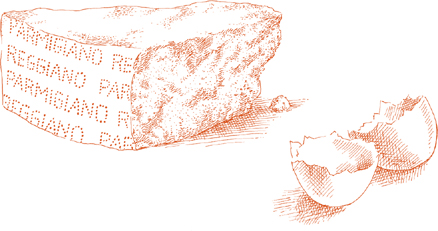
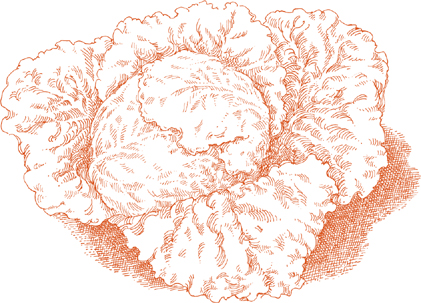
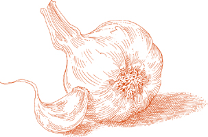
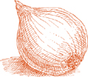

For 4 to 6 servings
2 large globe artichokes OR 3 to 4 medium size
½ lemon
2 tablespoons chopped onion
3 tablespoons extra virgin olive oil
½ teaspoon garlic chopped very fine
2 pounds fresh unshelled peas OR 1 ten-ounce package frozen peas, thawed
1 tablespoon chopped parsley
Salt
Black pepper, ground fresh from the mill
1. Trim the artichokes of all their tough parts. As you work, rub the cut artichoke with the lemon to keep it from turning black.
2. Cut each trimmed artichoke lengthwise into 4 equal sections. Remove the soft, curling leaves with prickly tips at the base, and cut away the fuzzy “choke” beneath them.
Detach the stems, but do not discard them, because they can be as good to eat as the heart if they are properly trimmed. Pare away their dark green rind to expose the pale and tender core, then split them in half lengthwise, or if very thick, into 4 parts.
Cut the artichoke sections lengthwise into wedges about 1 inch thick at their broadest point, and squeeze lemon juice over all the cut parts to protect them against discoloration.
3. Choose a heavy-bottomed or enameled cast-iron pot just large enough to accommodate all the ingredients, put in the chopped onion and olive oil, turn on the heat to medium high, cook and stir the onion until it becomes colored a very pale gold, then add the garlic. Cook the garlic until it becomes colored a light gold, then put in the artichoke wedges, ⅓ cup water, adjust heat to cook at a steady simmer, and cover the pot tightly.
4. If using fresh peas: Shell them, and prepare some of the pods for cooking by stripping away their inner membrane. It’s not necessary to use all or even most of the pods, but do as many as you have patience for. (The pods make a notable contribution to the sweetness of the peas and of the whole dish, but using them is an optional procedure that you can omit, if you prefer.)
5. When the artichokes have cooked for about 10 minutes, add the shelled peas and the optional pods, the chopped parsley, salt, pepper, and, if the liquid in the pot has become insufficient, ¼ cup water. Turn the peas over thoroughly to coat them well. Cover tightly again, and continue cooking until the artichokes feel very tender at their thickest point when prodded with a fork. Taste and correct for salt. Also taste the peas to make sure they are fully cooked. While the artichokes and peas are cooking, add 2 or 3 tablespoons of water if you find that there is not enough liquid.
If using frozen peas: Add the thawed peas as the last step, when the artichokes are already tender or nearly so, turning them thoroughly, and letting them cook with the artichokes for 5 minutes.
6. When both vegetables are fully cooked, should you find that the juices in the pot are watery, uncover, raise the heat to high, and quickly boil them away.
Ahead-of-time note  The dish can be prepared any time in advance on the same day it will be served. Do not refrigerate or its flavor will be altered. Reheat gently in a covered pot, with 1 tablespoon water, if necessary.
The dish can be prepared any time in advance on the same day it will be served. Do not refrigerate or its flavor will be altered. Reheat gently in a covered pot, with 1 tablespoon water, if necessary.
For 6 servings
3 large globe artichokes OR 5 or 6 medium size
½ lemon
4 large leeks, about 1¾ inch thick, OR 6 smaller ones
¼ cup extra virgin olive oil
Salt
Black pepper, ground fresh from the mill
1. Cut the trimmed artichokes into 1-inch wedges and pare and split the stems. As you work, rub the cut artichokes with the lemon to keep them from turning black.
2. Trim away the roots of the leeks, any of their leaves that are blemished, and about 1 inch off their green tops. Slice the leeks in half lengthwise, then cut them into pieces about 2 or 3 inches long.
3. Choose a heavy-bottomed or enameled cast-iron pot just large enough to accommodate all the ingredients, put in the leeks, the olive oil, and sufficient water to come 1 inch up the sides of the pan. Turn on the heat to medium, cover tightly, and cook at a steady simmer until the leeks are tender.
4. Add the artichoke wedges, salt, pepper, and, if necessary, 2 or 3 tablespoons water. Cover again and cook until the artichokes feel very tender at their thickest point when prodded with a fork, about 30 minutes or more, very much depending on the artichokes. While the artichokes are cooking, add 2 or 3 tablespoons of water if you find that there is not enough liquid. When they are done, taste and correct for salt. If you should find, once the artichokes are cooked, that the juices in the pot are watery, uncover, raise the heat to high, and quickly boil them away.
Ahead-of-time note The note at the end of Braised Artichokes and Peas is applicable here.
For 4 to 6 servings
2 large globe artichokes
½ lemon
1 pound potatoes
⅓ cup onion chopped coarse
¼ cup extra virgin olive oil
¼ teaspoon garlic chopped very fine
Salt
Black pepper, ground fresh from the mill
1 tablespoon chopped parsley
1. Cut the trimmed artichokes into 1-inch wedges and pare and split the stems. As you work, rub the cut artichokes with the lemon to keep them from turning black.
2. Peel the potatoes, wash them in cold water, and cut them into small wedges about ¾ inch thick at their broadest point.
3. Choose a heavy-bottomed or enameled cast-iron pot just large enough to accommodate all the ingredients, put in the chopped onion and olive oil, and turn on the heat to medium high. Cook and stir the onion until it becomes translucent, but not colored, then add the garlic. Cook the garlic until it becomes colored a light gold, then put in the potatoes, the artichoke wedges and stems, salt, pepper, and parsley, and cook long enough to turn over all the ingredients 2 or 3 times.
4. Add ¼ cup water, adjust heat to cook at a steady, but gentle simmer, and cover tightly. Cook until both the potatoes and artichokes feel tender when prodded with a fork, approximately 40 minutes, depending mostly on the potatoes. While cooking, add 2 or 3 tablespoons of water if you find that there is not enough liquid in the pot. Taste and correct for salt before serving.
Ahead-of-time note The note at the end of Braised Artichokes and Peas is applicable here.

FOR JUST SIX WEEKS in spring, between April and May, Sicilian cooks find vegetables young enough to make frittedda. Youth and freshness are the ideal components of this heavenly dish, the freshness of just-picked young artichokes, fava beans, and peas. I have seen frittedda made in Palermo when the vegetables were so tender they were cooked in hardly more time than it took to stir them in the pot.
If you grow your own, or if you have access to a good farmers’ market, you can come very close to duplicating the gentle Sicilian flavor of this dish. But even if you must rely on produce from the average greengrocer, either limit yourself to the time of the year when the vegetables required here are at their youngest, or adopt the compromises suggested below, and enough of frittedda’s magic will come through to make it worth your while.
The aroma of fresh wild fennel is an important part of this preparation, as it is of many other Sicilian dishes. If the herb is not available to you, use fresh dill or ask your greengrocer to keep for you the leafy tops he usually cuts off the, finocchio.
For 6 servings
3 medium OR 5 small artichokes, very fresh, with no black spots or other discoloration
½ lemon
2 pounds fresh, small fava beans in their pods OR ⅔ of a 15-ounce can “green fave,” drained
1 pound fresh small peas in their pods OR ½ of a 10-ounce package choice quality, frozen small peas, thawed
1 cup fresh wild fennel OR 1½ cups leafy finocchio tops OR ⅔ cup fresh dill
1½ cups sweet raw onion sliced very thin (see note below)
⅓ cup extra virgin olive oil Salt
Note Use the sweetest variety of onion available: Vidalia, Maui, or Bermuda. If you can obtain none of these, soak sliced yellow onion in several changes of cold water for 30 minutes, gently squeezing the onion in your hand each time you change the water; drain before using.
1. Cut the trimmed artichokes into ½-inch wedges, and trim, but do not split their stems. As you work, rub the cut artichokes with the lemon to keep them from turning black.
2. If using fresh fava beans, shell them and discard the pods.
3. If using fresh peas, shell them, and prepare some of the pods for cooking by stripping away their inner membrane. It’s not necessary to use all or even most of the pods, but the more you do, the sweeter the frittedda will taste.
4. Wash the wild fennel, finocchio tops, or dill in cold water, then chop into large pieces.
5. Choose a heavy-bottomed or enameled cast-iron pot just large enough to accommodate all the ingredients, put in the sliced onion and olive oil, turn on the heat to medium low, and cook until the onion becomes soft and translucent.
6. Put in the wild fennel, finocchio tops, or dill, the artichoke wedges and stems, stir thoroughly to coat well, and cover the pot tightly. After 5 minutes, check the artichokes. If they are at their prime, they should look moist and glossy, and the oil and the vapors from the onion and fennel should be sufficient to continue their cooking. But if they appear to be rather dry, add 3 tablespoons of water. If you are in doubt, add it anyway, it won’t do too much damage. When not checking the pot, keep it covered tightly.
7. If using fresh fava beans and peas: Add them when the artichokes are about half done, approximately 15 minutes if very young and fresh. Add 2 or 3 tablespoons water if you doubt that there is sufficient moisture in the pot to cook them. Turn all ingredients over to coat them well.
If using fresh fava beans and frozen peas: Put the beans in first, cook for 10 minutes if very small, 15 to 20 if larger, then add the thawed peas and cook for 5 minutes longer, until both the artichokes and fava are tender.
If using fresh peas and canned fava beans: When the artichokes are half done, put in the peas and their trimmed pods. Cook until both peas and artichokes are tender, adding 2 or 3 tablespoons water when needed, then put in the drained canned “green fave” and cook 5 minutes longer.
If using frozen peas and canned fava beans: Put in both the thawed peas and the drained beans at the same time, when the artichokes have just begun to feel tender when prodded with a fork. Cook for 5 minutes longer.
8. Taste and correct for salt before serving. Let the frittedda settle for a few minutes, allowing its flavors to emerge from the heat, before bringing it to the table, but do not serve it cold. If possible, plan to serve it when done, without reheating.
HERE IS one instance where one needn’t be too unbending about using frozen vegetables. Frozen artichoke hearts fry very well, and the contrast between their soft interior and the crisp egg and bread crumb crust is quite appealing. Not that one should pass up fresh artichokes, if they happen to be very young and tender.
For 4 to 6 servings
3 medium artichokes OR 1 ten-ounce package frozen artichoke hearts, thawed
If using fresh artichokes: ½ lemon and 1 tablespoon freshly squeezed lemon juice
1 egg
1 cup fine, dry, unflavored bread crumbs, spread on a plate
Vegetable oil
Salt
1. If using fresh artichokes: Cut the trimmed artichokes into 1-inch wedges, and trim and split their stems. As you work, rub the cut artichokes with the lemon to keep them from turning black.
Bring 3 quarts of water to a boil. Put in 1 tablespoon of lemon juice together with the artichokes, and cook for 5 minutes or more after the water returns to a boil, until the artichokes are tender, but still firm enough to offer some resistance when prodded at their thickest point with a fork. Drain, let cool, and pat dry.
If using frozen artichokes: When thawed, if whole, cut in half, and pat thoroughly dry with paper towels.
2. Lightly beat the egg in a small bowl or deep saucer.
3. Dip the artichokes into the egg, letting the excess flow back into the bowl, then roll them in the bread crumbs to coat them all over.
4. Put enough oil in a skillet to come ¾ inch up the sides, and turn the heat on to medium high. When the oil is hot enough to form a slight haze, slip the breaded artichokes into the skillet, cooking them long enough to form a crust on one side, then turning them and doing the other side. If they don’t all fit at one time into the pan loosely, without crowding, fry them in two or more batches. As each batch is done, transfer it with a slotted spoon or spatula to a cooling rack to drain or to a plate lined with paper towels. When they are all done, sprinkle with salt and serve at once.
Ahead-of-time note The recipe can be completed up to this point several hours in advance, but if refrigerating the crumbed vegetables, take them out in sufficient time to come fully to room temperature.
For 4 servings
4 large OR 6 medium artichokes
½ lemon
1 tablespoon freshly squeezed lemon juice
An oven-to-table baking dish
Butter for smearing the dish and dotting
Salt
½ cup freshly grated parmigiano-reggiano cheese
1. Cut the trimmed artichokes into 1-inch wedges, and trim and split their stems. As you work, rub the cut artichokes with the lemon to keep them from turning black.
2. Preheat oven to 375°.
3. Bring 3 quarts of water to a boil. Put in 1 tablespoon of lemon juice together with the artichokes, and cook for 5 minutes or more after the water returns to a boil, until the artichokes are tender, but still firm enough to offer some resistance when prodded at their thickest point with a fork. Drain and let cool.
4. Cut the artichoke wedges into very thin lengthwise slices.
5. Smear the bottom of the baking dish with butter, and cover it with a layer of artichoke slices and stems. Sprinkle with salt and grated Parmesan, and dot with butter. Repeat the procedure, building up layers of artichokes until all are used. Sprinkle the top layer generously with grated cheese and dot with butter.
6. Bake in the upper third of the preheated oven for 15 or 20 minutes, until a light crust forms on top. Allow to settle for a few minutes before serving.
IN THIS GRATIN, the artichokes are fully cooked before going into the oven with raw sliced potatoes and sautéed onions. While the potatoes cook, the thin artichoke slices become very soft, surrendering some of their texture in order to spread their flavor more liberally.
For 6 servings
2 large globe artichokes OR 4 medium size
1 lemon, cut in half
2 tablespoons butter plus more for dotting the baking dish
1 cup onion sliced thin
Salt
3 medium potatoes, peeled and sliced potato-chip thin
An oven-to-table baking dish
Black pepper, ground fresh from the mill
½ cup freshly grated parmigiano-reggiano cheese
1. Cut the trimmed artichokes into 1-inch wedges and pare and split the stems. Use half the lemon to moisten the cut parts with juice as you work. Put the artichoke wedges and stems into a bowl with enough cold water to cover and squeeze the juice of the other lemon half into the bowl. Stir and let stand until needed later.
2. Choose a saute pan large enough to accommodate all the ingredients, put in the 2 tablespoons of butter and the onion, and turn on the heat to medium. Cook the onion at a slow pace, stirring occasionally, until it is very soft and becomes colored a deep gold. Take off heat.
3. Drain the artichoke wedges and stems, and rinse them in cold water to wash away traces of their acidulated soak. Cut the wedges into the thinnest possible slices. Put the slices and the stems into the pan with the onion, sprinkle with salt, add ½ cup water, turn on the heat to medium, and cover the pot with the lid on slightly ajar. Cook at a slow, intermittent simmer, turning the artichokes from time to time, until they feel tender when prodded with a fork, about 15 minutes or more, depending on their youth and freshness.
4. While the artichokes are cooking, preheat oven to 400°.
5. When the artichokes are done, put the sliced potatoes in the pan, turn them over 2 or 3 times to coat them well, then remove from heat.
6. Pour the contents of the pan into a baking dish, preferably choosing one in which the ingredients, when they are all in, will not come more than 1½ inches up the sides. Add several grindings of pepper and a little more salt, and use the back of a spoon or a spatula to spread the artichoke and potato mixture evenly. Dot the top with butter, and place the dish in the upper rack of the preheated oven.
7. After 15 minutes, take the dish out of the oven, turn its contents 2 or 3 times, spread them out evenly again, and return to the oven. When the potatoes become tender, in another 15 minutes or so, take the pan out, sprinkle the top with grated Parmesan, and keep it in the oven until the cheese melts and forms a light crust. Allow the heat to subside for a few minutes before serving.
THE PASTRY SHELL for this vegetable pie is unusual because instead of the eggs that customarily go into making Italian flaky pastry it uses ricotta. It is very light, and the word that best describes its texture is, indeed, flaky.
The flavorful filling consists mainly of artichokes, which are sliced very thin and braised on a bed of carrot and onion. It is rounded out with eggs, ricotta, and Parmesan.
For 6 servings
FOR THE FILLING
4 medium artichokes
1 lemon, cut in half
3 tablespoons extra virgin olive oil
2 tablespoons chopped onion
3 tablespoons chopped carrot
1 tablespoon chopped parsley
Salt
Black pepper, ground fresh from the mill
¾ cup fresh ricotta
½ cup freshly grated parmigiano-reggiano cheese
2 eggs
1. Trim the artichokes of all their tough parts. As you work, rub the cut artichoke with a lemon half, squeezing drops of juice over it to keep it from turning black. Cut the trimmed artichokes in half to expose and discard the choke and prickly inner leaves, then cut them lengthwise into the thinnest possible slices. Put in a bowl with enough water to cover and the juice of the other lemon half.
2. Pare the artichoke stems of their hard outer skin, and cut them lengthwise into very thin slices. Add them to the bowl with the sliced artichokes.
3. Put the oil, onion, and carrot in a saute pan, and turn the heat on to medium. Cook and stir the onion until it becomes colored a pale gold. Then add the parsley, stirring it rapidly 2 or 3 times.
4. Drain the artichokes, rinse them well under cold water to wash away the lemon, pat them dry in a towel, then add them to the pan. Turn them over 2 or 3 times to coat them well, add salt and pepper, turn them over again another 2 or 3 times, then add ½ cup water, and put a lid on the pan. Cook until tender, from 5 to 15 minutes, depending on the youth and freshness of the artichokes. If in the meantime the liquid in the pan becomes insufficient, add 2 or 3 tablespoons water as needed. When the artichokes are done, however, there should be no water in the pan. If there is, remove the lid, raise the heat to high, and quickly boil it away. Pour the entire contents of the pan into a bowl and allow to cool completely.
5. When cool, mix in the ricotta and grated Parmesan.
6. Beat the eggs lightly in a deep dish, then swirl them into the bowl. Taste and correct the filling for salt and pepper.
MAKING THE PASTRY CRUST AND COMPLETING THE TORTA
1½ cups flour
8 tablespoons (1 stick) butter, softened to room temperature
¾ cup fresh ricotta
½ teaspoon salt
Wax paper OR kitchen parchment
An 8-inch springform pan
Butter and flour for the pan
1. Preheat oven to 375°.
2. Mix the flour, butter, ricotta, and salt in a bowl, using your fingers or a fork.
3. Turn the mixture out onto a work surface and knead for 5 to 6 minutes until the dough is smooth. Divide the dough into 2 unequal parts, one twice as large as the other.
4. Roll out the larger piece of dough into a circular sheet no thicker than ⅓ inch. To simplify transferring this to the pan, roll out the dough on lightly floured wax paper or kitchen parchment.
5. Smear the inside of the springform pan with butter, then dust it with flour and turn it over giving it a sharp rap against the counter to shake off loose flour.
6. Pick up the wax paper or kitchen parchment with the sheet of dough on it, and turn it over onto the pan, covering the bottom and letting it come up the sides. Peel away the wax paper or parchment, and smooth the dough, flattening and evening off any particularly bulky creases with your fingers.
7. Pour the artichoke filling into the pan and level it off with a spatula.
8. Roll out the remaining piece of dough, employing the same method you used earlier. Lay it over the filling, covering it completely. Press the edge of the top sheet of pastry dough against the edge of that lining the pan. Make a tight seal all around, folding any excess dough toward the center.
9. Place on the uppermost rack of the preheated oven and bake until the top is lightly browned, about 45 minutes. When you take it out of the oven, unlatch the pan’s spring, and remove the hoop. Allow the torta to settle a few minutes before loosening it from the bottom and transferring to a serving platter. Serve either lukewarm or at room temperature.

Obscurity is often the fate of products that start out in life under a confusing name. This fine, but unjustly neglected, vegetable is not from Jerusalem, it is a native of North America; it is not an artichoke, it is the edible root of a variety of sunflower. Sunflower, in Italian, is girasole, which to non-Italian ears evidently sounded like Jerusalem. Even more strangely, its Italian name is not remotely related to girasole or sunflower. It is topinambur, the name of a Brazilian troupe that toured the country at apparently the same time the root was introduced. It may finally become better known to English speakers as “sunchoke,” the name its producers have decided to coin for it, and which will be the one used henceforth here.
How to use When sliced very thin, raw sunchokes are crisp and juicy at the same time, with a nutty flavor that is most welcome in a salad. When sautéed or gratinéed, their texture is a blend of cream and silk, and their taste vaguely recalls that of artichoke hearts, but is sweeter, with none of the artichoke’s underlying bitterness. The thin skin can be left on when they are to be eaten raw, but must be removed for cooking because it hardens.
How to buy Sunchokes are in season from fall through early spring. They are at their best when very firm; as they lose freshness, they become spongy.
For 6 servings
1½ pounds sunchokes Salt
¼ cup extra virgin olive oil
1 teaspoon garlic chopped very fine
Black pepper, ground fresh from the mill
1 tablespoon parsley chopped very fine
1. Skin the sunchokes, using a small paring knife or a swiveling-blade peeler. Bring 3 quarts of water to a boil, add salt, then drop in the peeled sunchokes, the larger pieces first, holding back the smaller ones a few moments. When the water returns to a boil, take the sunchokes out. As soon as they are cool enough to handle, cut them into slices ¼ inch thick or less. They should still be quite firm.
2. Put the olive oil and garlic in a skillet, and turn on the heat to medium. Cook, stirring the garlic, until it becomes colored a very pale gold, then add the sliced sunchokes, turning them thoroughly to coat them well. Add salt, pepper, and chopped parsley, and turn them over completely once again. Cook until the sunchokes feel very tender when prodded with a fork, turning them from time to time while they are cooking. Taste and correct for salt and serve at once.
For 4 servings
1 pound sunchokes
Salt
An oven-to-table baking dish
Butter for smearing and dotting the baking dish
Black pepper, ground fresh from the mill
¼ cup freshly grated parmigiano-reggiano cheese
2. Peel the sunchokes and drop them in salted, boiling water. Cook them until they feel tender, but not mushy when prodded with a fork. Ten minutes after the water returns to a boil, check them frequently because they tend to go from very firm to very soft in a brief span of time. Drain when done, and as soon as they are cool enough to handle, cut them into ½-inch thick slices.
3. Smear the bottom of a baking dish with butter, then place the sunchoke slices in it, arranging them so they overlap slightly, roof tile fashion. Sprinkle with salt, pepper, and the grated Parmesan, dot with butter, and place the dish on the uppermost rack of the preheated oven. Bake until a light golden crust begins to form on top. Allow to settle for a few minutes out of the oven before serving.
For 6 servings
1½ pounds sunchokes
¼ cup extra virgin olive oil
1 cup onion sliced very fine
½ teaspoon chopped garlic
2 tablespoons chopped parsley
⅔ cup canned imported Italian plum tomatoes, chopped, with their juice
Salt
Black pepper, ground fresh from the mill
1. Skin the sunchokes with a paring knife or a swiveling-blade peeler, wash them in cold water, and cut them into pieces about 1 inch thick.
2. Put the oil and onion in a saute pan, and turn on the heat to medium high. Cook and stir the onion until it becomes colored a deep gold, then put in the garlic. Stir rapidly, add the parsley, stir quickly 2 or 3 times, then put in the tomatoes with their juice. Stir to coat well, and adjust heat to cook at a steady simmer.
3. When the tomatoes have simmered for 5 minutes, add the cut-up sunchokes, salt, and pepper, turn the sunchokes over completely once or twice to coat them well, and adjust heat to cook at a very slow, intermittent simmer. Cook for about 30 to 45 minutes, stirring occasionally, until the sunchokes feel very tender when prodded with a fork.
Ahead-of-time note The dish may be cooked through to the end several hours or even a day in advance. Do not reheat more than once.
For 6 servings
1 pound sunchokes
8 bunches scallions
3 tablespoons butter
Salt
Black pepper, ground fresh from the mill
1. Skin the sunchokes with a paring knife or a swiveling-blade peeler, wash them in cold water, and pat thoroughly dry with paper towels. Cut them into very thin slices, preferably no more than ¼ inch thick.
2. Trim away the scallions’ roots and any blemished leaves, but do not remove the green tops. Wash in cold water, pat dry, and make 2 short pieces out of each scallion, cutting it across in half. If some have thick bulbs, split them lengthwise in half.
3. Put the butter in a saute pan and turn on the heat to medium high. When the butter has melted and is foaming, put in the scallions, turn them to coat them well, lower the heat to medium, and add ½ cup water. Cook until all the water evaporates, turning the scallions from time to time.
4. Add the sunchoke slices, salt, and pepper, and turn them over thoroughly to coat them well. Add another ½ cup water, and cook at a steady, but gentle simmer until the water evaporates completely, turning the scallions and sunchokes from time to time. Check the sunchokes with a fork while they cook. If very fresh, they may become tender before all the water evaporates. Should this happen, turn the heat up to high and boil away the liquid quickly. If, on the other hand, the water has evaporated and they are not yet fully tender, add 2 or 3 tablespoons of water and continue cooking. In most cases, the sunchokes will be done within 20 or 25 minutes. Taste and correct for salt and serve at once.

For 4 servings
1 pound sunchokes
Vegetable oil
Salt
1. Skin the sunchokes with a paring knife or a swiveling-blade peeler, and cut them into the thinnest possible slices. Wash them in several changes of cold water to rinse away traces of soil and some of the starch. Pat thoroughly dry with paper towels.
2. Pour enough oil in a skillet to come a little more than ¼ inch up the sides, and turn the heat on to high. When the oil is hot, slip in as many of the sunchoke slices as will fit loosely, without crowding the pan. When they become colored a nice russet brown on one side, turn them and do the other side. Transfer them with a slotted spoon or spatula to a wire cooling rack to drain or to a platter lined with paper towels. Put in the next batch and repeat the procedure until all the sunchokes are done. Sprinkle with salt and serve at once.
How to buy The first thing to look at is the tip of the spear or the bud. It should be tightly closed and erect, not open and droopy. The hue of green asparagus should be fresh, bright, and with no hint of yellow. White asparagus should be a clear, even, creamy color. The stalk should feel firm and the overall look should be dewy. Although asparagus, like nearly everything else, is now marketed through most of the year, it is freshest in the spring, from April to early June. A thick spear of asparagus is not necessarily better than a skinny one, but it is usually more expensive. If you will be cutting up asparagus for a pasta sauce, or a risotto, or a frittata, you certainly don’t need to pay a premium for size. If you are serving the asparagus whole, however, a meatier stalk may sometimes be more satisfying.
How to keep Ideally, asparagus should go from the market into the pot, but hours or even a day may elapse during which you’ll want to keep it as fresh as possible. Bunch the asparagus if loose, and stand it with its butts in a container with 1 or 2 inches of cold water. You can store it thus in a cool place, unrefrigerated, for up to a day or a day and a half.
How to prepare for cooking All but a small woody portion at the bottom of the stalk can be made edible, if the asparagus is properly prepared. Begin by slicing off about 1 inch at the thick butt end. If you find that the end of the stalk you exposed is parched and stringy, slice off a little more until you reach a moister part. The younger the asparagus is, the less you will need to trim from the bottom.
Even though the center of the stalk is juicy and tender, the darker green fibers that surround it are not, and must be pared away. Hold the asparagus with the tip pointing toward you, and using a small, sharp knife, strip away the hard, thin, outer layer of the stalk, beginning at the base, at a depth of about 1/16th of an inch, and gradually tapering to nothing as you bring the blade up toward the narrower section of the stalk at the base of the bud. Give the stalk a slight turn and repeat the procedure until you have trimmed it all around. Then remove any small leaves sprouting below the spear’s tip.
Soak the spears for 10 minutes in a basin full of cold water, then wash in 2 or 3 changes of water.
How to cook Choose any pan that can later contain the trimmed spears lying flat. Fill with water and bring it to a boil. Add 1 tablespoon salt for every pound of asparagus, and as the water starts boiling rapidly again, put in the asparagus. Cover the pan to hasten the water’s return to a boil. When it does so, you can uncover the pan. After 10 minutes, you can begin testing the asparagus by prodding the thickest part of the stalk with a fork. It is done when easily pierced. (If very thin and exceptionally fresh, it may take a minute or two less.) Drain immediately when cooked.

For 4 servings
2 pounds fresh asparagus
Salt
An oven-to-table baking dish
Butter for smearing and dotting the dish
⅔ cup freshly grated parmigiano-reggiano cheese
1. Preheat oven to 450°.
2. Trim and boil the asparagus.
3. Smear the bottom of a rectangular or oval baking dish with butter. Place the drained, boiled asparagus in the dish, laying them down side by side in partly overlapping rows, with all the buds pointing in the same direction. The tips of the spears in the top row should overlap the butt ends of the stalks in the row below. Sprinkle each row with salt and grated cheese, and dot with butter, before laying another row on top of it.
4. Bake in the uppermost rack of the preheated oven until a light, golden crust forms on top. Check after 15 minutes’ baking. After taking it out of the oven, allow to settle for a few minutes before serving.
For 4 servings
To the ingredients in the preceding recipe, add:
2 tablespoons butter
4 eggs
Salt
Black pepper, ground fresh from the mill
1. Prepare Gratinéed Asparagus with Parmesan as directed in the recipe above.
2. Take the baking dish out of the oven, and divide the asparagus into 4 portions, putting each on a warm dinner plate.
3. Put the butter in a skillet, turn on the heat to medium high, and as the butter foam begins to subside, break the eggs into the pan and sprinkle with salt. Do not put any more eggs in at one time than will fit without overlapping. If the pan cannot accommodate all of them at once, fry them in two or more batches.
4. Slide a fried egg over each portion of asparagus, then spoon juices from the baking pan over each egg. Sprinkle with pepper and serve at once.
For 6 servings
18 choice thick spears fresh asparagus
½ pound Italian fontina cheese, cut into thin slices (see note below)
6 large thin slices of prosciutto
2 tablespoons butter plus more for smearing and dotting a baking dish
An oven-to-table baking dish
Note If you cannot find true imported Italian fontina, rather than substituting bland imitation fontina from other sources, use parmigiano-reggiano cheese shaved into thin, long slivers. If you do so, substitute boiled unsmoked ham for the prosciutto because both Parmesan and prosciutto are salty and the two combined might make the asparagus bundles too salty.
1. Trim and boil the asparagus, cooking it more on the firm than on the soft side.
2. Preheat oven to 400°.
3. Set aside 12 slices of fontina (or 12 long slivers of Parmesan), and divide the rest of the cheese into 6 more or less equal mounds.
4. Spread open a slice of prosciutto (or boiled ham) and on it place 3 asparagus. In between the spears fit all the cheese from one of the 6 equal mounds. Add 1 teaspoon butter, then wrap the prosciutto tightly around the asparagus spears. Proceed thus until you have made 6 prosciutto- or ham-wrapped clusters of asparagus and cheese.

5. Choose a baking dish that will contain all the bundles without overlapping. Lightly smear the bottom of the dish with butter and put in the asparagus bundles. Over each place 2 crisscrossed slices of fontina or slivers of Parmesan taken from the cheese you had earlier set aside. Dot every one of the sheaves lightly with butter and place the dish on the uppermost rack of the preheated oven. Bake for about 20 minutes, long enough for the cheese to melt and form a lightly mottled crust.
6. After taking it out of the oven, allow to settle for a few minutes before serving. When serving each bundle, baste it with some of the juices in the baking dish, and provide good, crusty bread for sopping them up.

Until the discoverers of America came back home with beans, as well as with gold and silver, the only bean known to Europe up to then was the fava, or broad bean. Curiously, although it has been grown and consumed for close to 5,000 years, its popularity in Italy has never traveled above the south and center. Tuscans grow them by the acre and eat them by the bushel, even without cooking them, dipping them raw in coarse salt and chasing them down with pecorino, ewe’s milk cheese. But in northern Italy, most people have never had them, and would have no idea what to do with them.
When and how to buy Their season lasts from April to June, but the best beans are the earliest and youngest. When shelled, they should be the size of lima beans or only slightly larger. Bigger fava are tougher, drier, and more starchy. Look for pods that do not bulge too thickly with overgrown beans.
How to cook When cooking fresh fava beans, the best advice is, do as the Romans do. The classic Roman preparation, which in the spring you can sample in every trattoria in the city, has few peers among great bean dishes. I have never gone through a single spring without cooking it at least half a dozen times, and no food I can put on the table is ever more warmly received. In Rome, the dish is known as fave al guanciale, because the beans are cooked with pork jowl, guanciale. In the version given here, pancetta—which is far easier to find—replaces pork jowl with total success.
For 4 servings
Pancetta in a single slice ½ inch thick
3 pounds unshelled young fresh fava beans
2 tablespoons extra virgin olive oil
2 tablespoons onion chopped fine
Black pepper, ground fresh from the mill
Salt
1. Unroll the pancetta and cut it into strips ¼ inch wide.
2. Shell the beans, discarding the pods. Wash the fava in cold water.
3. Put the oil and onion in a saute pan, and turn on the heat to medium. Cook and stir the onion until it becomes translucent, then add the pancetta strips. Cook for about 2 to 3 minutes, then add the beans and pepper, and stir to coat them well. Add ⅓ cup of water, adjust heat to cook at the slowest of simmers, and put a lid on the pan. If the beans are very young and fresh, they will cook in about 8 minutes, but if they are not in their prime, they may take 15 minutes or even longer. Test them with a fork from time to time. If the liquid becomes insufficient for cooking, replenish it with 3 or 4 tablespoons water. When tender, add salt, stir thoroughly, and cook another minute or two. If there should be any water left in the pan, uncover, raise the heat to high, and boil it away quickly. Serve at once, accompanied by thick slices of crusty bread.

Spring and summer are generous with their gifts of vegetables, but none is more precious, or more characteristic of the Italian table, than young green beans at their freshest. When on a June day in Italy, you have let yourself fall in with the rhythm of an Italian meal and have had pasta, followed perhaps by scaloppine or chicken or fish, and then to the table comes a dish of still lukewarm boiled green beans, glistening with olive oil and lemon juice, you may well think, after a bite of those beans, that nothing could taste better.
There is no magic in making a dish of plain boiled beans look and taste wonderful. The quality of the olive oil is tremendously important, of course. But it really starts with the beans, how they are chosen and how they are cooked.
How to buy Although they are now available throughout the year, the ones grown locally in spring and summer are still the best. Their color should be a uniform green, either light or dark, but even, without spots or yellowing patches. Their skin should be fresh looking, almost moist, not dull. And the beans should not be a mixed lot, but all of one size, preferably not too thick. If you can, take a bean from the basket and snap it: It should snap sharply and crisply.
How to cook Beans must be cooked long enough to develop a round, nutty, sweet flavor: They should not be overcooked, but not undercooked either. When undercooked, theirs is not the taste of beans, but the raw taste of grass. When boiling beans, you must add salt to the boiling water before dropping in the beans in order to keep their color a bright green. This principle applies to all green vegetables, particularly spinach and Swiss chard. The vegetable does not become salty because virtually all the salt remains dissolved in the water.

Boiling 1 pound of green beans
• Snap both ends off the beans, then soak the beans in a basin of cold water for 10 minutes.
• Bring 4 quarts water to a boil. Add 1 tablespoon salt, which will momentarily slow down the boil. As soon as the water is boiling rapidly again, drop in the drained green beans. When the water returns again to a boil, adjust heat so that it boils at a moderate pace. Cooking times will vary depending on the youth and freshness of the beans. If very young and fresh it may take 6 or 7 minutes; if not, it may take 10 or 12 minutes or even longer. Begin tasting the beans after they have been cooking 6 minutes. Drain when firm, but tender, when they have lost their raw, vegetal taste.
For 6 servings
1 pound fresh, crisp green beans
3 tablespoons butter
¼ cup freshly grated parmigiano-reggiano cheese
Salt
1. Trim, soak, boil, and drain the green beans as described above.
2. Put the beans and the butter in a skillet and turn on the heat to medium. As the butter melts and begins to foam, turn the beans to coat them well. Add the grated cheese, turning over the beans thoroughly. Taste a bean and correct for salt. Turn them over once or twice again, transfer to a warm platter, and serve at once.
For 6 servings
1 pound fresh, young green beans
3 or 4 medium carrots
Salt
¼ pound mortadella OR boiled unsmoked ham, diced into ¼-inch cubes
3 tablespoons butter
1. Trim, soak, boil, and drain the green beans. They will undergo more cooking later in the pan, so drain them when quite firm.
2. Peel the carrots, wash them in cold water, and cut them into sticks slightly thinner than the beans.
3. Choose a saute pan that can accommodate all the ingredients without crowding them. Put in the beans, the carrots, salt, the diced mortadella or ham, and the butter. Turn on the heat to medium and cook, turning the beans and carrots over frequently to coat them well. When the butter begins to foam, cover the pan. Cook until the carrots are just tender, checking after 5 to 6 minutes, and turning them and the beans from time to time. Taste and correct for salt and serve promptly.
NOWHERE IN ITALY is the cooking of vegetables raised to greater heights than it is on the Genoese coast. The fragrance and the satisfying depth of flavor that characterize that cuisine is well represented by this savory pie that combines green beans with potatoes, marjoram, and Parmesan. It’s a dish that will fit into any menu scheme, as an appetizer, a vegetable side dish, a light summer luncheon course, or as part of a buffet table.
For 6 servings
½ pound boiling potatoes
1 pound fresh green beans
2 eggs
1 cup freshly grated parmigiano-reggiano cheese
Salt
Black pepper, ground fresh from the mill Chopped marjoram, 2 teaspoons if fresh, 1 teaspoon if dried
A 9-inch round cake pan
Extra virgin olive oil
Unflavored bread crumbs, lightly toasted
1. Wash the potatoes, put them with their peel on in a pot with enough cold water to cover amply, and bring to a boil.
2. Trim, soak, boil, and drain the green beans. They will undergo considerably more cooking in the oven later, so drain them when quite firm.
3. Chop the beans very fine, but not pureed, in a food processor, or pass them through the largest holes of a food mill, and put them into a bowl.
4. Preheat oven to 350°.
5. Drain the potatoes when tender, testing them with a fork, peel them, and pass them through a food mill or a potato ricer into the bowl containing the beans. Do not use a food processor because it makes potatoes gluey.
6. Break the eggs into the bowl, add the grated Parmesan, salt, a few grindings of pepper, and the marjoram. Mix thoroughly to blend all ingredients uniformly.
7. Lightly smear the baking pan with olive oil. Sprinkle bread crumbs over the entire inside surface of the pan, then turn the pan upside down and rap it on the counter to shake out excess crumbs.
8. Put the bean and potato mixture into the pan, distributing it evenly and leveling it with a spatula. Top with a sprinkling of bread crumbs and over them pour a thin and evenly spread stream of olive oil. Place in the upper third of the preheated oven, and bake for 1 hour. Allow to settle for a few minutes, then run a knife blade all around the pie to loosen it from the pan, invert it over a plate, then again over another plate. Serve warm or at room temperature.
Ahead-of-time note You can complete the recipe several hours in advance. Do not refrigerate. Finish and serve it the same day you start it.
For 4 to 6 servings
1 pound fresh green beans
1 sweet yellow bell pepper
3 tablespoons extra virgin olive oil
1 medium onion sliced very thin
⅔ cup canned imported Italian plum tomatoes, chopped coarse, with their juice, OR fresh, ripe tomatoes, peeled and cut up
Salt
Chopped hot red chili pepper, to taste
1. Snap both ends off the beans, soak them in a basin of cold water for 10 minutes, then drain and set aside.
2. Wash the pepper in cold water, split it lengthwise along its creases, remove the seeds and pulpy core, and skin it raw, using a swiveling-blade peeler. Cut it into long strips less than ½ inch wide.
3. Put the oil and onion in a saute pan, turn the heat on to medium, and cook the onion, stirring, until it becomes translucent. Add the strips of pepper and the chopped tomatoes with their juice. Turn all ingredients over to coat them well, and adjust heat to cook at a steady, but gentle simmer for about 20 minutes, until the oil floats free of the tomatoes.
4. Add the raw green beans, turn them over 2 or 3 times to coat them well, add ⅓ cup water or less if you are using fresh tomatoes that turn out to be watery, salt, and chili pepper. Cover and cook at a steady simmer until tender, 20 to 30 minutes, depending on the youth and freshness of the beans. If the cooking liquid becomes insufficient, add 1 or 2 tablespoons water as needed. When the beans are done, if the pan juices are watery, uncover, turn the heat up to high, and rapidly boil them down. Taste and correct for salt and chili pepper, and serve promptly.
Ahead-of-time note The dish can be cooked through to the end several hours in advance and gently reheated before serving. Do not refrigerate.

A pasticcio can be one of two things in Italian. In everyday life it means a “mess,” such as in “How did I ever get into this pasticcio?” When produced intentionally by a cook, however, it is a mix of cheese and vegetables, meat, or cooked pasta, bound by eggs or bechamel, or both. Sometimes it is baked in a pastry crust, sometimes not. The one given below could be made in a crust, but it is not and I think it is both lighter and better for it.
For 6 servings
1 pound fresh green beans
3 tablespoons butter
Salt
Béchamel Sauce, made using 1¼ cups milk, 2 tablespoons butter, 2 tablespoons flour, and ⅛ teaspoon salt
3 eggs
3 tablespoons freshly grated parmigiano-reggiano cheese
Whole nutmeg
A 6- to 8-cup soufflé mold
½ cup unflavored bread crumbs, lightly toasted
1. Snap both ends off the beans, soak them in a basin of cold water for 10 minutes, drain, and cut into pieces about 1 inch long.
2. Choose a saute pan that can contain all the beans snugly, but without overlapping. Put in 2 tablespoons butter, the green beans, 2 or 3 pinches of salt, just enough water to cover, and turn on the heat to medium high. Cook, turning the beans from time to time, until all the water has simmered away. Continue to cook for a minute or two, turning the beans in the butter, then take off heat.
3. Preheat oven to 375°.
4. Make the béchamel sauce, cooking it to medium density.
5. Beat the eggs lightly in a mixing bowl, and swirl in the grated Parmesan and a tiny grating of nutmeg—about ⅛ teaspoon. Add the green beans and the béchamel, mixing thoroughly to obtain a uniform blend of all the ingredients.
6. Smear the inside of the soufflé mold with the remaining tablespoon of butter, and sprinkle with enough bread crumbs to coat the bottom and sides. Turn the mold upside down and give it a sharp rap against the counter to shake away loose crumbs. Pour the contents of the mixing bowl into the mold.
7. Place the mold on the uppermost rack of the preheated oven, and bake until a light crust forms on top, about 45 minutes.
8. To unmold, run a knife along the side of the pasticcio while it is hot, loosening it from the dish all the way around. Allow it to settle for a few minutes, then cover the mold with a dinner plate turned bottom up, grasp both the plate and the mold with a towel, holding them together tightly, and turn the mold upside down. The pasticcio should slip out onto the plate easily, with at most a little shake. Now you want to turn it right side up onto another plate. Sandwich the pasticcio between two plates and turn it over. Allow to settle for several minutes before serving.

We have come to expect broccoli to be in the market all year, but it does have a natural season, from late fall through winter, when it is at its best. When buying it, the florets or buds are the best guide to its freshness: They should be tightly closed, and their deep blue-green or purplish color must show no hint of yellow. The meatiest and tastiest part of the vegetable is its stem, which only needs be trimmed of its tough outer skin to become eminently edible. The leaves are also excellent, with a taste like that of kale, and in Italy, where broccoli comes to the market freshly picked and enveloped by its leaves, they are highly prized. Unfortunately, they are also highly perishable, and in North America the packer strips them away. If you grow your own, try the leaves in a vegetable or bean soup.
THE TECHNIQUE illustrated by this recipe—sautéing blanched green vegetables in olive oil and garlic—is analogous to that used for spinach and Swiss chard, and it is one of the tastiest ways to prepare broccoli.
For 6 servings
1 bunch fresh broccoli (about 1 to 1½ pounds)
Salt
¼ cup extra virgin olive oil
2 teaspoons garlic chopped very fine
2 tablespoons chopped parsley
1. Cut off about ½ to ¾ inch of the butt end of the stalk. Use a sharp paring knife to slice away the tough dark-green skin that surrounds the tender core of the main stalk and the branching-off stems. Dig deeper where the stalk is broadest because the skin is thicker there. Split the larger stalks in two or, if quite large, in four, without detaching the florets. Wash in 3 or 4 complete changes of cold water.
2. Bring 4 quarts water to a fast boil. Add 1 tablespoon salt and as the water returns to a boil, drop in the broccoli. Adjust heat to maintain a moderately paced boil, and cook until the broccoli stalk can be pierced by a fork, about 5 minutes, depending on the vegetable’s youth and freshness. Drain at once when done.
3. Choose a saute pan or skillet that can accommodate all the broccoli without crowding it too tightly. Put in the olive oil and garlic, and turn on the heat to medium. Cook and stir the garlic until it becomes colored a pale gold, then add the broccoli, salt, and the chopped parsley. Turn the vegetable pieces over 2 or 3 times to coat them thoroughly. Cook for about 2 minutes, then transfer the contents of the pan to a warm platter and serve at once.
Ahead-of-time note Prepare the broccoli up to this point several hours ahead of time on the same day you will be serving it, but do not refrigerate.
For 6 servings
1 bunch fresh broccoli, trimmed, washed, cooked, and drained as described above
3 tablespoons butter
Salt
½ cup freshly grated parmigiano-reggiano cheese
Choose a skillet or saute pan that will contain all the broccoli pieces without crowding them tightly, put in the butter, turn the heat on to medium, and when the butter foam begins to subside, add the cooked, drained broccoli and salt. Turn the broccoli over completely 2 or 3 times, and cook for about 2 minutes, then add the grated Parmesan. Turn the broccoli over again, then transfer the contents of the pan to a warm platter and serve at once.
ONLY THE FLORETS are used here because they lend themselves best to frying. The stalks are too good to throw away, however; after trimming them, use them in a cooked salad, or a vegetable soup, or saute them with garlic and olive oil.
For 6 servings
1 medium bunch fresh broccoli (about 1 pound)
Salt
2 eggs
1 cup fine, dry, unflavored bread crumbs, spread on a plate
Vegetable oil
Note The batter used here consists of eggs and bread crumbs. Another excellent batter for the florets is pastella, flour and water batter, used for fried zucchini.
1. Cut off the florets where their stems meet the stalk. Set the stalk aside, trimming it of its hard outer skin, and use it in another dish as suggested in the introductory remarks above.
2. Wash the florets in 2 or 3 changes of cold water. Bring 2 quarts water to a fast boil, add a large pinch of salt, and as the water resumes its boil, drop in the florets. From time to time, submerge any part of a floret that floats above the water line to keep it from turning yellow. When the water comes to a full boil again, retrieve the florets with a colander spoon and set aside to cool. When they are cold, cut the larger florets lengthwise into pieces about 1 inch thick. Try to have all the pieces more or less equal in size so that you can fry them evenly.
3. Break the eggs into a soup plate, and beat them lightly with a fork.
4. Dip the broccoli, one piece at a time, in the beaten egg, letting excess egg flow back into the plate, then dredge it in the bread crumbs, turning to coat it all over and patting it with your fingertips to cause the breading to adhere securely. Put all the dipped and breaded pieces on a plate until you are ready to fry them.
5. Pour enough oil in a skillet or frying pan to come ½ inch up the sides, and turn on the heat to medium high. When the oil is very hot, slip in as many pieces of broccoli florets as will fit in at one time without crowding the pan. When they have formed a nice golden crust on one side, turn them and do the other side. Transfer them to a cooling rack to drain or to a platter lined with paper towels. Do another batch, and repeat the above procedure, until all the broccoli pieces are done. Sprinkle liberally with salt and serve at once.

ANY VARIETY of cabbage—Savoy cabbage, red cabbage, or the common pale-green cabbage—works well in this recipe. It is shredded very fine and cooked very slowly in the vapors from its own escaping moisture combined with olive oil and a small amount of vinegar. The Venetian word for the method is sofegao, or smothered.
For 6 servings
2 pounds green, red, or Savoy cabbage
½ cup chopped onion
½ cup extra virgin olive oil
1 tablespoon chopped garlic
Salt
Black pepper, ground fresh from the mill
1 tablespoon wine vinegar
1. Detach and discard the first few outer leaves of the cabbage. The remaining head of leaves must be shredded very fine. If you are going to do it by hand, cut the leaves into fine shreds, slicing them off the whole head. Turn the head after you have sliced a section of it until gradually you expose the entire core, which must be discarded. If you want to use the food processor, cut the leaves off from the core in sections, discard the core, and process the leaves through a shredding attachment.
2. Put the onion and olive oil into a large sauté pan, and turn the heat on to medium. Cook and stir the onion until it becomes colored a deep gold, then add the garlic. When you have cooked the garlic until it becomes colored a very pale gold, add the shredded cabbage. Turn the cabbage over 2 or 3 times to coat it well, and cook it until it is wilted.
3. Add salt, pepper, and the vinegar. Turn the cabbage over once completely, lower the heat to minimum, and cover the pan tightly. Cook for at least 1½ hours, or until it is very tender, turning it from time to time. If while it is cooking, the liquid in the pan should become insufficient, add 2 tablespoons water as needed. When done, taste and correct for salt and pepper. Allow it to settle a few minutes off heat before serving.
I KNOW of no other preparation in the Italian repertory, or in other cuisines, for that matter, more successful than this one in freeing the rich flavor that is locked inside the carrot. It does it by cooking the carrots slowly in no more liquid than is necessary to keep the cooking going so that they are wholly reduced to their essential elements of flavor. When cooked, they are tossed briefly over heat with grated Parmesan.
For 6 servings
1½ pounds carrots
4 tablespoons butter (½ stick)
Salt
¼ teaspoon sugar
3 tablespoons freshly grated parmigiano-reggiano cheese
1. Peel the carrots, wash them in cold water, and slice them into ⅜ inch disks. The thin tapered ends can be cut thicker. Choose a saute pan that can contain the carrot rounds spread in a single snug layer, without overlapping. Put in the carrots and butter, and enough water to come ¼ inch up the sides. If you do not have a single pan large enough, use two smaller ones, dividing the carrots and butter equally between them. Turn on the heat to medium. Do not cover the pan.
2. Cook until the water has evaporated, then add salt and the ¼ teaspoon sugar. Continue cooking, adding from 2 to 3 tablespoons water as needed. Your objective is to end up with well-browned, wrinkled carrot disks, concentrated in flavor and texture. It will take between 1 and 1½ hours, during which time you must watch them, even while you do other things in the kitchen. Stop adding water when they begin to reach the wrinkled, browned stage, because there must be no liquid left at the end. In 30 minutes or a little more, the carrots will become so reduced in bulk that, if you have been using two pans, you will be able to combine them in a single pan.
3. When done—they should be very tender—add the grated Parmesan, turn the carrots over completely once or twice, transfer them to a warm platter, and serve at once.
Ahead-of-time note The carrots can be finished entirely in advance, except for the Parmesan, which you will add only when reheating, just before serving.

For 4 servings
1 pound choice young carrots
3 tablespoons extra virgin olive oil
1 teaspoon chopped garlic
2 tablespoons chopped parsley
Salt
Black pepper, ground fresh from the mill
2 tablespoons capers, soaked and rinsed if packed in salt, drained if in vinegar
1. Peel the carrots and wash them in cold water. They ought to be no thicker than your little finger. If they are not that size to start with, cut them lengthwise in half, or in quarters if necessary.
2. Choose a sauté pan that can later accommodate all the carrots loosely. Put in the olive oil and garlic, and turn on the heat to medium high. Cook and stir the garlic until it becomes colored a pale gold, then add the carrots and parsley. Toss the carrots once or twice to coat them well, then add ¼ cup water. When the water has completely evaporated, add another ¼ cup. Continue adding water at this pace, whenever it has evaporated, until the carrots are done. They should feel tender, but firm, when prodded with a fork. Test them from time to time. Depending on the youth and freshness of the carrots, it should take about 20 to 30 minutes. When done, there should be no more water left in the pan. If there is still some, boil it away quickly, and let the carrots brown lightly.
3. Add pepper and the capers, and toss the carrots once or twice. Cook for another minute or two, then taste and correct for salt, stir once again, transfer to a warm platter, and serve at once.
How to buy A head of cauliflower must be very hard, with leaves that are fresh, crisp, and unblemished. The florets should be compact and as white as possible. If they are yellowish or speckled, it is preferable to look elsewhere or do without.
• Detach and discard most of the leaves, except for the small, tender inner ones, which are very nice to eat if you are serving the cauliflower as cooked salad. Cut a deep cross into the root end.
• Bring 4 to 5 quarts of water to a rapid boil. The more water you use the sweeter the cauliflower will taste and the faster it will cook. Put in the cauliflower and when the water returns to a boil, adjust heat to cook at a moderate boil.
• Cook, uncovered, until the cauliflower feels very tender when prodded with a fork, 20 minutes or more, depending on the freshness and size of the head. Drain immediately when done.
Ahead-of-time note If you are not serving boiled cauliflower lukewarm as salad, but are planning to use it in a gratin or for frying, you can cook it up to 1 day in advance.
For 6 servings
1 medium head cauliflower, about 2 pounds
An oven-to-table baking dish
Butter for smearing and dotting the baking dish
Salt
⅔ cup freshly grated parmigiano-reggiano cheese
2. Boil and drain the cauliflower as described. When it has cooled enough to handle, divide the head into separate florets.
3. Choose a baking dish that can contain the florets snugly. Smear the bottom with butter and arrange the florets in it so that they overlap slightly, roof-tile fashion. Sprinkle with salt and grated Parmesan, and dot liberally with butter. Bake on the uppermost rack of the preheated oven until a light crust forms on top, about 15 to 20 minutes. After taking it out of the oven, let the cauliflower settle for a few minutes before serving.
For 6 servings
1 medium head cauliflower, about 2 pounds
Salt
Béchamel Sauce, made using 2 cups milk, 4 tablespoons (½ stick) butter, 3 tablespoons flour, and ¼ teaspoon salt
¾ cup freshly grated parmigiano-reggiano cheese
Whole nutmeg
An oven-to-table baking dish
Butter for smearing and dotting the baking dish
1. Boil and drain the cauliflower, but because baking it with the bechamel later will soften it up, cook only 10 minutes after the water returns to a boil. Separate the florets and cut them into bite-size slices about ½ inch thick. Put them in a bowl and toss them with a little salt.
2. Preheat oven to 400°.
3. Make the béchamel sauce as described. When it reaches a medium density, remove it from heat and mix in all but 3 tablespoons of the grated Parmesan and a tiny grating of nutmeg—about ⅛ teaspoon.
4. Add the bechamel to the bowl with the cauliflower and fold it in gently, coating the florets well.
5. Smear the bottom of a baking dish with butter. Put in the cauliflower and all the bechamel in the bowl. The dish should be able to contain the cauliflower pieces in a layer not more than 1½ inches deep. Sprinkle the top with the remaining 3 tablespoons of grated Parmesan and dot lightly with butter. Bake on the uppermost rack of the preheated oven until a light crust forms on top, about 15 to 20 minutes. After taking it out of the oven, let the cauliflower settle for a few minutes before serving.
For 6 or more servings
1 medium head cauliflower, about 2 pounds
2 eggs
1 cup unflavored bread crumbs, lightly toasted, spread on a plate
Vegetable oil
Salt
1. Boil and drain the cauliflower. When it has cooled enough to handle, detach the florets from the head and cut them into wedges about 1 inch thick at their widest point.
2. Break the eggs into a small bowl and beat them lightly.
3. Dip the cauliflower wedges in the egg, letting excess egg flow back into the bowl, then turn them in the bread crumbs, coating them all over.
4. Pour enough oil in a frying pan to come ½ inch up the sides, turn the heat on to high, and when the oil is very hot, slip in as many cauliflower pieces as will fit loosely, without crowding the pan. When a nice, golden crust has formed on one side, turn them and do the other side. Transfer with a slotted spoon or spatula to a cooling rack to drain or to a platter lined with paper towels. If there are more cauliflower pieces left to be fried, repeat the procedure. When they are all done, sprinkle with salt, and serve at once.
TRUE parmigiano-reggiano cheese makes marvelous frying batters because it is an ideal bonding agent, melting without becoming runny, stringy, or rubbery. And, of course, it also contributes its own unique flavor. The fluffy, tender crust this batter produces is ideal for such vegetable pieces as cauliflower. If you are pleased with it, try it with preboiled broccoli or finocchio.
For 6 or more servings
1 head young cauliflower, 2 pounds or less
Salt
½ cup lukewarm water
⅓ cup flour
⅓ cup freshly grated parmigiano-reggiano cheese
1 egg
Vegetable oil
1. Boil and drain the cauliflower. When it has cooled enough to handle, detach the floret clusters from the head at the base of their stems, separate into individual florets, and cut each of them lengthwise in two. Sprinkle lightly with salt.
2. Put the lukewarm water in a bowl, and add the flour to it gradually, shaking it through a strainer, not a sifter. Beat the mixture with a fork while you add the flour. Add the grated Parmesan and a pinch of salt and stir well.
3. Break the egg into a deep soup plate, beat it lightly with a fork, then mix it thoroughly into the flour and Parmesan mixture.
4. Pour enough vegetable oil in a skillet to come ¼ inch up its sides, and turn on the heat to high. When a speck of batter dropped into the pan stiffens and instantly floats to the surface, the oil is hot enough for frying.
5. Dip 2 or 3 florets in the batter, letting excess batter flow back into the bowl as you lift them out, and slip them into the pan. Add a few more batter-coated pieces to the pan, but do not put too many in at one time or the temperature of the oil will drop.
6. When the cauliflower forms a nice golden crust on one side, turn it and do the other side. Transfer with a slotted spoon or spatula to a cooling rack to drain or to a platter lined with paper towels. As room opens up in the pan, add more pieces of cauliflower. When they are all done, sprinkle with salt, and serve at once.

DESPITE THE SEQUENCE of cooking procedures—first the celery is blanched to fix its color; then it’s sautéed with onion and pancetta to provide a flavor base; after that it is braised with broth to make it tender; and finally it is gratinéed with grated Parmesan to give it a savory finish—this is not a very complicated dish to prepare. You should find the means completely justified by the simply delicious end.
For 6 servings
2 large bunches crisp, fresh celery
3 tablespoons onion chopped fine
2 tablespoons butter
¼ cup chopped pancetta OR prosciutto
Salt
Black pepper, ground fresh from the mill
2 cups Basic Homemade Meat Broth OR ½ cup canned beef broth diluted with 1½ cups water
An oven-to-table baking dish
1 cup freshly grated parmigiano-reggiano cheese
1. Cut off the celery’s leafy tops, and detach all the stalks from their base. Save the hearts for a salad or for dipping in Pinzimonio. Use a swiveling-blade peeler to pare away most of the strings, and cut the stalks into pieces about 3 inches long.
2. Bring 2 or 3 quarts of water to a rapid boil, drop in the celery, and 1 minute after the water has returned to a boil, drain them and set them aside.
3. Preheat oven to 400°.
4. Put the onion and butter in a saucepan, and turn the heat on to medium. Cook and stir the onion until it becomes translucent, then add the chopped pancetta or prosciutto. Stir to coat well, cook for 1 minute, then put in the celery, salt, and pepper, toss the celery to coat it well, and cook for about 5 minutes, stirring occasionally.
5. Add the broth, adjust heat to cook at a very gentle simmer, and cover the pan. Cook until the celery feels tender when prodded. Test the celery from time to time with a fork and when you find that it is nearly done—almost tender, but slightly firm—uncover the pan, raise the heat to high, and boil away all the liquid.
6. Remove only the celery to the baking dish and arrange it with the inner, concave side of the stalks facing up. Over the celery, spoon the onion and pancetta or prosciutto mixture still in the pan, then top with grated Parmesan. Place on the uppermost rack of the preheated oven for a few minutes until the cheese melts and forms a light crust. After taking the dish out of the oven, allow it to settle for several minutes before bringing it to the table.
Ahead-of-time note The celery can be prepared up to this point several hours in advance on the same day that you will finish cooking it.
For 4 to 6 servings
5 medium potatoes
1 large bunch celery
⅓ cup extra virgin olive oil
Salt
2 tablespoons freshly squeezed lemon juice
1. Peel the potatoes, wash them in cold water, and cut them in half or, if large, in quarters.
3. Choose a heavy-bottomed or enameled cast-iron pot that can subsequently contain all the ingredients, put in the celery, olive oil, salt, and enough water to cover, turn the heat on to medium, and put a lid on the pot.
4. Simmer the celery for 10 minutes, then add the potatoes, a pinch of salt, and the lemon juice, and cover the pot again. Cook until both the celery and potatoes are tender, testing them with a fork from time to time. It may take about 25 minutes. (Sometimes the celery lags behind while the potatoes are already done. Should this happen, transfer the potatoes with a slotted spoon to a warm covered dish, and continue cooking the celery until it is tender.)
5. When the celery and potatoes are both cooked, the only liquid in the pot should be oil. If there is water, uncover the pot, raise the heat, and boil it away. (If the potatoes have been taken out of the pot earlier, put them back in after the water—if there was any—has been boiled away. Cover the pot again, turn the heat down to medium, and warm up the potatoes for about 2 minutes.) Taste and correct for salt, and serve promptly.
For 4 to 6 servings
About 2 pounds celery
¼ cup extra virgin olive oil
1½ cups onion sliced very thin
⅔ cup pancetta, cut into thin strips
¾ cup canned imported Italian plum tomatoes, chopped coarse, with their juice
Salt
Black pepper, ground fresh from the mill
2. Put the oil and onion in a saute pan, and turn on the heat to medium. Cook and stir the onion until it wilts completely and becomes colored a light gold, then add the pancetta strips.
3. After a few minutes, when the pancetta’s fat loses its flat, white uncooked color and becomes translucent, add the tomatoes with their juice, the celery, salt, and pepper, and toss thoroughly to coat well. Adjust heat to cook at a steady simmer, and put a cover on the pan. After 15 minutes check the celery, cooking it until it feels tender when prodded with a fork. If while the celery is cooking, the pan juices become insufficient, replenish with 2 to 3 tablespoons of water as needed. If on the contrary, when the celery is done, the pan juices are watery, uncover, raise the heat to high, and boil the juices away rapidly. Serve promptly when done.
There is no green more useful than Swiss chard for Italian cooking. Its broad, dark green leaves, whose flavor is sweeter, less emphatic than spinach, can be used in pasta dough to dye it green, or together with cheese, for the filling in a variety of stuffed pastas. The leaves are good in soup, delicious boiled and served with olive oil and lemon juice, or sautéed with olive oil and garlic. The broad, sweet-tasting stalks of mature chard are magnificent in gratin dishes, or sautéed, or fried.

For 4 servings
The broad, white stalks from 2 bunches mature Swiss chard
An oven-to-table baking dish
Butter for smearing and dotting the baking dish
Salt
⅔ cup freshly grated parmigiano-reggiano cheese
Note This is an excellent recipe to keep in mind if you have used chard leaves in pasta, soup, or a cooked salad. You can keep the trimmed stalks in the refrigerator for 2 or 3 days. Or, if it is the leaves that are going to be left over after doing this dish, try to use them in one of the ways cited above within 24 hours.
1. Cut the chard stalks into pieces about 4 inches long, and wash them in cold water. Bring 3 quarts water to a boil, drop in the stalks, and cook at a moderate boil until they feel tender when prodded with a fork, approximately 30 minutes, depending on the stalks. Drain and set aside.
2. Preheat oven to 400°.
3. Smear the bottom and sides of a baking dish with butter, place a layer of chard stalks on the bottom, laying them end to end, and if necessary, trimming to fit. Sprinkle lightly with salt and with grated cheese, and dot sparingly with butter. Repeat the procedure, building up layers of stalks, until you have used them all. The top layer should be sprinkled generously with Parmesan and thickly dotted with butter.
4. Bake on the uppermost rack of the preheated oven until the cheese melts and forms a light, golden crust on top. You might begin to check after 10 or 15 minutes. After taking it out of the oven, let it settle for a few minutes before bringing it to the table.
For 4 servings
2½ cups Swiss chard stalks, cut into pieces 1½ inches long
3 tablespoons extra virgin olive oil
1½ teaspoons chopped garlic
2 tablespoons chopped parsley
Salt
Black pepper, ground fresh from the mill
1. Wash the chard stalks in cold water. (See note about using the chard leaves.) Bring 3 quarts water to a boil, drop in the stalks, and cook at a moderate boil until they feel tender when prodded with a fork, approximately 30 minutes, depending on the stalks. Drain and set aside.
2. Put the olive oil and garlic in a saute pan, turn on the heat to medium. Cook and stir the garlic until it becomes very lightly colored, then add the boiled stalks, the parsley, salt, and pepper. Turn the heat up to medium high, tossing and turning the stalks to coat them well. Cook for about 5 minutes, then transfer the contents of the pan to a warm plate and serve at once.
THE TREASURES that Venice brought back from its trade and its wars with the empires of the East did not consist solely of silks and marbles, of gems and precious artifacts, but of ingredients and ways of cooking that were new to the West. Some examples, such as the fish in saor, are still part of the city’s everyday fare. But in the seldom-explored recesses of Venetian cooking are others just as wonderful, like this tasty vegetable pie of young chard, onion, pine nuts, raisins, and Parmesan cheese.
For 4 to 6 servings
2½ pounds young Swiss chard with undeveloped stalks or 3¼ pounds mature chard
Salt
Extra virgin olive oil, ¼ cup for cooking the chard plus more for greasing and topping the pan
⅔ cup onion chopped fine
1 cup freshly grated parmigiano-reggiano cheese
2 eggs, lightly beaten
¼ cup pignoli (pine nuts)
⅓ cup seedless raisins, preferably of the muscat variety, soaking in enough water to cover
Black pepper, ground fresh from the mill
A 9½- or 10-inch springform baking pan
⅔ heaping cup unflavored bread crumbs, lightly toasted
1. If using mature chard, cut off the broad stalks and set aside to use in vegetable soup or bake as described in this recipe. Cut the leaves and any very thin stalks into ¼-inch shreds. Soak the shredded chard in a basin with several changes of cold water, until the water runs completely clear of any soil.
2. Put about 1 quart water in a pot large enough to contain the chard later, and bring it to a boil. Add a liberal quantity of salt, wait for the water to resume a fast boil, then drop in the chard. Cook until tender, about 15 minutes depending on the youth and freshness of the chard, then drain and set aside to cool.
3. When cool enough to handle, take as much chard in your hand as you can hold and squeeze as much moisture out of it as you can. When you have done all the chard, chop it very fine—into pieces no bigger than ¼ inch—using a knife, not the food processor.
4. Preheat oven to 350°.
5. Choose a saute pan that can subsequently contain all the chard, put in ¼ cup olive oil and the chopped onion, and turn on the heat to medium. Cook the onion, stirring frequently, until it becomes colored a light nut-brown.
6. Add the chopped chard, and turn up the heat to high. Cook, turning the chard over frequently, until it becomes difficult to keep it from sticking to the bottom of the pan, then transfer the entire contents of the pan to a bowl and set aside to cool.
7. When the chard has cooled down to room temperature, add the grated Parmesan, the beaten eggs, and the pine nuts. Drain the raisins, squeeze them dry in your hand, and add them to the bowl, together with a few grindings of pepper. Mix thoroughly until all ingredients are evenly combined, and taste and correct for salt and pepper.
8. Smear the bottom and sides of the springform pan with about 1 tablespoon olive oil. Put in a little more than half the bread crumbs, spreading them to cover the bottom and sides of the pan. Add the chard mixture, leveling it off, but not pressing it hard. Top with the remaining bread crumbs, and drizzle with about 1 tablespoon of olive oil poured in a thin stream. Put the pan in the preheated oven and bake for 40 minutes.
9. When you take the pan out, run a knife blade around the edge of the torte, loosening it from the sides of the pan, then unlatch the springform hoop and remove it. After 5 or 6 minutes, use a spatula to loosen the torte from the pan’s bottom section and slide it, without turning it over, onto a serving platter. Serve at room temperature. Do not refrigerate.
When and what to buy Although you can walk into a market almost any time of the year and find eggplant, it never tastes quite so good the rest of the year as it does during its natural season, from mid- to late summer. It is at its best for a not too long period after it has been picked; beyond that, its underlying bitter flavor begins to be more prominent and most eggplant has to be purged of it by steeping in salt (see below). Do not buy eggplant that feels soft and spongy or whose skin is mottled, opaque, or wrinkled. It should feel firm in the hand, and the skin should be glossy, smooth, and intact.
The typical Italian eggplant is long, skinny, and dark purple, but Italians also use globe-like ones as well as the stout, pear-shaped variety prevalent in North America, and white eggplant is not uncommon. All of these can be found at one time or another in many markets, and for most recipes they are interchangeable. White eggplant seems to me to be the most dependable because of its usually mild flavor and firm flesh, and it is the kind I’d choose, if I had a choice. The pale purple Chinese eggplant found in Oriental markets is delicious, but its sweetness seems cloying when it is part of an Italian dish.
Purging eggplant As a preliminary to most recipes, you must purge eggplant of its harshness, which on occasion can be considerable. Proceed thus:
• Cut off its green, spiky top and peel the eggplant. You can omit peeling it if it is the young, skinny Italian variety sometimes known as “baby” eggplant.
• Cut lengthwise into slices about ⅜ inch thick.
• Stand one layer of slices upright against the inside of a pasta colander and sprinkle with salt. Stand another layer of slices against it, sprinkle it with salt, and repeat the procedure until you have salted all the eggplant you are working with.
• Place a deep dish under the colander to collect the drippings and let the eggplant steep under salt for 30 minutes or more.
• Before cooking, pat each slice thoroughly dry with paper towels.
FRIED EGGPLANT slices are not only a delicious appetizer or vegetable dish on their own, but they are the indispensable component of Eggplant Parmesan, of pasta sauces with eggplant, this recipe and this recipe, and of special combinations of vegetables and meat. To fry it so that the eggplant doesn’t become sodden with oil, you must have a lot of very hot oil in the pan.
For 6 to 8 servings as a vegetable side dish or an appetizer
3 to 4½ pounds eggplant
Salt
Vegetable oil
1. Slice the eggplant and steep it in salt as described above.
2. Choose a large frying pan, pour enough oil into it to come 1½ inches up the sides, and turn the heat up to high. When you have dried the eggplant thoroughly with paper towels, test the oil by dipping into it the end of one of the slices. If it sizzles, the oil is ready for frying. Slip as many slices of eggplant into the pan as will fit loosely without overlapping. Cook to a golden brown color on one side, then turn them and do the other side. Do not turn them more than once. When both sides are done, use a slotted spoon or spatula to transfer them to a cooling rack to drain or to a platter lined with paper towels. Repeat the procedure until all the eggplant is done. If you find the oil becoming too hot, reduce the heat slightly, but do not add more oil to the pan.
If serving the eggplant on its own, you can choose to serve it immediately, when still hot, or allow it to cool to room temperature, when it may taste even better. Taste to see if it needs salt. The eggplant may already be salty enough from its preliminary steeping.

NEXT TO SPAGHETTI with tomato sauce, this may well have been, for a certain generation or two, the most familiar of Italian dishes. Perhaps some cooks find it too commonplace to attract their serious attention, but at home I have never stopped making it, and I am pleased to see eggplant Parmesan continuing to appear in Italy, not just in pizza parlors, but even in rather fancy restaurants. No dish has ever been devised that tastes more satisfyingly of summer, and its popularity will no doubt endure long after many of the newer arrivals on the Italian food scene have had their day.
For 6 servings
3 pounds eggplant
Vegetable oil
Flour spread on a plate
2 cups canned imported Italian plum tomatoes, well drained and chopped coarse
1 tablespoon extra virgin olive oil
Salt
¾ pound mozzarella, preferably buffalo-milk mozzarella
8 to 10 fresh basil leaves
An oven-to-table baking dish, approximately 11 inches by
7 inches or its equivalent
Butter for smearing and dotting the dish
½ cup freshly grated parmigiano-reggiano cheese
1. Slice the eggplant and steep it in salt, as described.
2. Choose a large frying pan, pour enough oil into it to come 1½ inches up the sides, and turn the heat up to high. When you have dried the eggplant thoroughly with paper towels, dredge the slices in the flour, coating them on both sides. Do only a few slices at a time at the moment you are ready to fry them, otherwise the flour coating will become soggy. After coating with flour, fry the eggplant, following the method described in the basic recipe.
3. Put the tomatoes and olive oil in another skillet, turn the heat on to medium high, add salt, stir, and cook the tomato down until it is reduced by half.
4. Preheat oven to 400°.
5. Cut the mozzarella into the thinnest possible slices. Wash the basil, and tear each leaf into two or more pieces.
6. Smear the bottom and sides of the baking dish with butter. Put in enough fried eggplant slices to line the bottom of the dish in a single layer, spread some of the cooked tomato over them, cover with a layer of mozzarella, sprinkle liberally with grated Parmesan, distribute a few pieces of basil over it, and top with another layer of fried eggplant. Repeat the procedure, ending with a layer of eggplant on top. Sprinkle with grated Parmesan, and place the dish in the upper third of the preheated oven.
7. Occasionally eggplant Parmesan throws off more liquid as it bakes than you want in the pan. Check after it has been in the oven for 20 minutes by pressing down the layered eggplant with the back of a spoon, and draw off any excess liquid you may find. Cook for another 15 minutes, and after taking it out allow it to settle for several minutes before bringing it to the table.
Ahead-of-time note Eggplant Parmesan tastes best shortly after it has been made, but if you must, you can complete it from several hours to 2 or 3 days in advance. Refrigerate under plastic wrap when cool. Warm it up on the topmost rack of a preheated 400° oven.

For 4 to 6 servings
A 1¼- to 1½-pound eggplant
Salt
1 egg
2 cups unflavored bread crumbs, lightly toasted, spread on a plate
Vegetable oil
1. Trim and peel the eggplant, cut it lengthwise into ⅛-inch-thick slices, and steep it in salt, as described.
2. Lightly beat the egg in a deep plate or small bowl.
3. When the eggplant slices have finished steeping, pat them thoroughly dry with paper towels. Dip each slice in the beaten egg, letting excess egg flow back into the dish, then turn it in the bread crumbs, coating both sides. Press the bread crumbs onto each slice with the flat of your hand until your hand feels dry and the crumbs are sticking firmly to the surface of the eggplant.
4. Pour enough oil into a frying pan to come 1½ inches up the sides and turn the heat on to medium high. When you think the oil is quite hot, test it by dipping into it the end of one of the slices. If it sizzles, the oil is ready for frying. Slip as many slices of eggplant into the pan as will fit loosely without overlapping. Cook until the eggplant forms a crisp, golden brown crust on one side, then turn it and do the other side. When both sides are done, use a slotted spoon or spatula to transfer them to a cooling rack to drain or to a platter lined with paper towels. Repeat the procedure until all the eggplant is done. Sprinkle with salt and serve at once.
WHEN YOU SEE it listed on Italian menus as al funghetto, it means that the eggplant is cooked in olive oil with garlic and parsley, in an adaptation of the procedure traditionally associated with the cooking of mushrooms. At first, because eggplant has the structure of a sponge, you will see it soak up most of the oil. You mustn’t be alarmed; as you continue cooking, the heat causes the spongy structure to cave in and release all the oil. Never add oil while cooking; simply make sure you have enough at the start.
For 6 servings
1. Trim and peel the eggplant, and cut it into 1-inch cubes. Put the cubes in a pasta colander, sprinkle liberally with salt, toss to distribute the salt evenly, and set over a deep dish. Let steep for 1 hour, then take the eggplant pieces out of the colander and pat them thoroughly dry with paper towels.
2. Put the garlic and olive oil in a skillet or saute pan, and turn on the heat to medium. Cook the garlic, stirring, until it becomes colored a pale gold. Remove it, add the eggplant, and turn the heat up to medium high. At first, when the eggplant soaks up all the oil, turn it frequently. When the heat causes it to discharge the oil, lower the flame to medium again. When the eggplant has cooked for about 15 minutes, add the parsley and pepper. Toss thoroughly and continue to cook another 20 minutes or so, until the eggplant feels very tender when prodded with a fork. Taste and correct for salt. Transfer to a serving platter, using a slotted spoon or spatula.
THE MOST SUITABLE eggplants for this recipe are the sweet, skinny ones not much larger than zucchini, but not miniature. They may be either the purple or white variety.
For 8 servings
8 thin, long “baby” eggplants
2 teaspoons garlic chopped very fine
2 tablespoons parsley chopped very fine
Salt
Black pepper, ground fresh from the mill
¼ cup unflavored bread crumbs, lightly toasted
⅓ cup extra virgin olive oil
½ pound mozzarella, preferably buffalo-milk mozzarella, sliced no thicker than ¼ inch
1. Trim the eggplants’ green tops away, wash them in cold water, and split them lengthwise in two. Score the eggplant flesh in a cross-hatched pattern, cutting it deeply, while being careful not to pierce the skin.
2. Choose a saute pan large enough to accommodate all the eggplant halves without overlapping. If you need 2 pans, increase the olive oil to ½ cup. Place the eggplants in the pan, skin side down, cross-hatched side facing up.
3. Put the garlic, parsley, salt, pepper, bread crumbs, and 1 tablespoon of olive oil in a small bowl and mix well to combine the ingredients uniformly. Spoon the mixture over the eggplant halves, pressing it into and in between the cuts.
4. Pour the remaining olive oil in a thin stream, partly over the eggplants, partly directly into the pan. Cover, turn on the heat to medium low, and cook until the eggplant feels very tender when prodded with a fork, 20 or more minutes. Blanket each eggplant half with a layer of sliced mozzarella, turn up the heat to medium, cover the pan again, and cook until the mozzarella has melted.
THE TENDER FLESH of baked eggplant is chopped and mixed with bread crumbs, parsley, garlic, egg, and Parmesan to form patties. They are floured and browned in hot oil, and they taste very, very good.
For 4 to 6 servings
About 2 pounds eggplant
⅓ cup unflavored bread crumbs, lightly toasted
3 tablespoons parsley chopped very fine
2 garlic cloves, peeled and chopped very fine
1 egg
3 tablespoons freshly grated parmigiano-reggiano cheese
Salt
Black pepper, ground fresh from the mill
Vegetable oil
Flour, spread on a plate
1. Preheat oven to 400°.
2. When the oven is hot, wash the eggplants, keeping them whole and untrimmed. Place them on the uppermost rack of the preheated oven, with a baking pan on a lower rack to collect any drippings. Bake until tender, when a toothpick will penetrate them without resistance, about 40 minutes, depending on their size.
3. Take the eggplants out of the oven and as soon as they are cool enough to handle, peel them, and cut them into several large pieces. Put the pieces in a pasta colander set over a deep dish. The eggplant should shed most of its liquid, a process that should take about 15 minutes and one which you can encourage by gently squeezing the pieces.
4. Chop the eggplant flesh very fine and combine it in a bowl with the bread crumbs, parsley, garlic, egg, grated Parmesan, salt, and pepper. Mix thoroughly to obtain a uniform blend of ingredients. Taste and correct for salt and pepper. Shape the mixture with your hands into a number of patties about 2 inches in diameter and ½ inch thick, spreading them out on the counter or on a platter.
5. Pour enough vegetable oil into a frying pan to come ½ inch up the sides, and turn on the heat to high. When the oil is very hot, turn the patties on both sides in the flour, and slip them into the pan. Do not put in any more at one time than will fit loosely, without crowding the pan. When they have formed a nice dark crust on one side, turn them, do the other side, then use a slotted spoon or spatula to transfer them to a cooling rack to drain or to a platter lined with paper towels. Taste to correct for salt. Serve either hot or lukewarm.
The fried patties made using the basic recipe above
1½ cups onion sliced very fine
⅓ cup extra virgin olive oil
1½ cups canned imported Italian plum tomatoes, chopped, with their juice
Salt
Black pepper, ground fresh from the mill
1. Choose a saute pan that can subsequently contain all the patties snugly, but without overlapping. Put in the onion and the olive oil, and turn on the heat to medium low. Cook the onion, stirring, until it becomes colored a deep gold, then add the chopped tomatoes. Continue to cook until the oil floats free from the tomatoes, about 20 minutes. Add salt and pepper, and stir thoroughly.
2. Add the fried eggplant patties to the pan. Turn them a few times in the onion and tomato sauce, and when they are completely reheated through and through, transfer the entire contents of the pan to a warm platter and serve at once.
The fried patties made using the basic recipe above
An oven-to-table baking dish
Butter for greasing the baking dish
Mozzarella, preferably buffalo-milk mozzarella, cut into as many ¼-inch slices as there are eggplant patties to cover
1. Preheat oven to 400°.
2. Choose a baking dish that can accommodate all the patties without overlapping, smear it with butter, and put in the fried eggplant patties. Cover each patty with a slice of mozzarella.
3. Place the dish on the uppermost rack of the preheated oven. When the mozzarella melts, take the dish out of the oven and bring to the table promptly.
IN ITALIAN this might be called a pizza—pizza di scarola—but torta, “pie,” is a more accurate name for it.
Escarole is related to chicory, with crisp, open, wavy leaves that form a pale green at their ruffled tips and fade to a creamy white at the base. While rather bland when raw, it acquires an appealingly tart, earthy taste cooked. (See this soup.) In the filling for this torta, escarole is sautéed with olive oil, garlic, olives, and capers, then anchovies and pine nuts are added. The shell is a simplified, savory bread dough that goes through one rising. The traditional shortening for the dough is lard, which produces the finest texture, but if the choice of lard causes concern, you can substitute olive oil. The 10-inch pan I like to use yields a torta about 2 inches deep.
For 8 servings
FOR THE DOUGH
2⅔ cups unbleached flour
1 teaspoon salt
Black pepper, ground fresh from the mill
⅓ package active dry yeast, dissolved in 1 cup lukewarm water
2 tablespoons lard, softened well at room temperature, OR 3 tablespoons extra virgin olive oil
FOR THE FILLING
Salt
⅓ cup extra virgin olive oil
2 teaspoons chopped garlic
3 tablespoons capers, soaked and rinsed if packed in salt, drained if in vinegar
10 black, round Greek olives, pitted and each cut into 4 pieces
7 flat anchovy fillets (preferably the ones prepared at home), cut into ½-inch pieces
3 tablespoons pignoli (pine nuts)
TO BAKE THE TORTA
Wax paper OR kitchen parchment
A 10-inch springform pan
Butter for smearing the pan
1. To make the dough, pour the flour onto a work surface and shape it into a mound. Make a hollow in the center of the mound and put into it the salt, a few grindings of pepper, the dissolved yeast, and the softened lard or olive oil. Knead it for about 8 minutes. It is best if the dough is kept soft, but if you have difficulty handling it, either add another tablespoon or two of flour, or knead it in the food processor.
2. Shape the kneaded dough into a ball, and put it into a lightly floured bowl. Cover the bowl with a damp, doubled-up cloth towel, and put in a warm, protected corner of the kitchen until the dough has doubled in bulk, about 1 to 1½ hours.
3. Preheat oven to 375°.
4. While the dough is rising, prepare the filling. Trim the escarole of any bruised or discolored outer leaves, then cut it into 2-inch long pieces. Soak them in a basin filled with cold water, scooping them up, emptying the basin, refilling it with fresh water, and soaking them again, repeating the process 3 or 4 times.
5. Bring 3 to 4 quarts water to a boil, add salt, and drop in the escarole. Cook until tender, about 15 minutes, depending on its youth and freshness. Drain it and as soon as it is cool enough to handle, squeeze it gently to cause it to shed as much moisture as possible. Set it aside.
6. Put the olive oil and garlic in a large saute pan, turn on the heat to medium, and cook the garlic, stirring, until it becomes colored a pale gold. Add the escarole, turning it over once or twice to coat it well. Reduce heat to medium low and cook for 10 minutes, turning the escarole from time to time. If the pan juices are watery, turn the heat up and reduce them quickly. Add the capers, turn them over with the escarole, then add the olives, turn over again, and remove from heat. Mix in the anchovies and pine nuts. Taste and correct for salt, then pour the entire contents of the pan into a bowl and set aside to cool.
7. When the dough has doubled in bulk, divide it into 2 unequal parts, one twice the size of the other. Roll out the larger piece of dough into a circular sheet large enough to line the bottom and sides of the springform pan. It should come out approximately ¼ inch thick. To simplify transferring this to the pan, roll out the dough on lightly floured wax paper or kitchen parchment.
8. Smear the inside of the springform pan with butter, pick up the wax paper or kitchen parchment with the sheet of dough on it, and turn it over onto the pan, covering the bottom and letting it come up the sides. Peel away the wax paper or parchment, and smooth the dough, flattening and evening off any particularly bulky creases with your fingers.
9. Pour all the escarole filling from the bowl into the pan, and level it off with a spatula.
10. Roll out the remaining piece of dough, employing the same method you used earlier. Lay it over the filling, covering it completely. Press the edge of the top sheet of bread dough against the edge of that lining the pan. Make a tight seal all around, folding any excess dough toward the center.
11. Place on the uppermost rack of the preheated oven and bake until the torta swells slightly, and the top becomes colored a pale gold, about 45 minutes. When you take it out of the oven, unlatch the pan’s spring, and remove the hoop. Allow the torta to settle a few minutes before loosening it from the bottom and transferring it to a serving platter. Serve either lukewarm or at room temperature.
Although there is an English equivalent for finocchio—Florence fennel—for many cooks it’s the Italian word that has achieved everyday usage. Fennel is related to anise, but its cool, mild aroma has none of its kin’s sharpness. People eat finocchio raw, in salads, but it is an exceptionally fine vegetable for braising, sautéing, gratinéing, and frying. The bulbous base is the part that is used, while the stems and leaves are usually discarded. When wild fennel is called for but not available, finocchio’s, leafy tops are a tolerable substitute.

When and how to buy The best season for finocchio, when it is juiciest and its fragrance is sweetest and freshest, is from fall to spring, but it is also available in summer. Italians distinguish between male and female finocchio, the first with a stocky, round bulb, the latter flat and elongated. The “male” is crisper and less stringy, and it has a finer scent, qualities that are particularly desirable when it is to be eaten raw. For cooking, the flatter bulb is acceptable, but as long as it’s equally fresh, the thicker, rounder one will always taste better.
For 4 servings
3 large finocchi OR 4 to 5 smaller ones
⅓ cup extra virgin olive oil Salt
1. Cut the finocchio tops where they meet the bulb and discard them. Detach and discard any of the bulb’s outer parts that may be bruised or discolored. Slice off about ⅛ inch from the butt end. Cut the bulb vertically into slices somewhat less than ½ inch thick. Wash the slices in several changes of cold water.

2. Put the finocchio and the olive oil in a large saucepan, add just enough water to cover, and turn on the heat to medium. Do not put a lid on the pot. Cook, turning the slices over from time to time, until the finocchio becomes colored a glossy, pale gold and feels tender when prodded with a fork. Bear in mind that the butt end of the slice should be firm compared with the softer upper part of the slice. It should take between 25 and 40 minutes, depending on the freshness of the finocchio. If while cooking you find the liquid in the pan becoming insufficient, add up to ⅓ cup water. By the time the finocchio is done, all the water must be absorbed. Add salt, toss the slices once or twice, then transfer the contents of the pan to a warm platter and serve at once.
Omit the olive oil in the ingredients list of the preceding recipe, and add ¼ cup butter and 3 tablespoons freshly grated parmigiano-reggiano cheese. Follow the cooking procedure described in the recipe above, substituting butter for the olive oil. When the finocchio is done, sprinkle with salt, add the grated Parmesan, toss three or four times, then serve at once.
For 4 to 6 servings
3 finocchi
2 eggs
1½ cups unflavored bread crumbs, lightly toasted, spread on a plate
Vegetable oil
Salt
1. Trim, slice, and wash the finocchio as described in Braised Finocchio with Olive Oil.
2. Bring 3 quarts of water to a boil, then drop in the sliced finocchio. Cook at a moderate boil until the butt end of the slice feels tender, but firm when prodded with a fork. Drain, and set aside to cool.
3. Beat the eggs with a fork in a deep dish or small bowl.
4. Dip the cooled, parboiled finocchio slices in the beaten egg, letting excess egg flow back into the dish, then turn it in the bread crumbs, coating both sides. Press the bread crumbs onto each slice with the palm of your hand until your hand feels dry and the crumbs are sticking firmly to the finocchio.
5. Pour enough oil into a frying pan to come ½ inch up the sides. When you think the oil is quite hot, test it by dipping into it the end of one of the slices. If it sizzles, the oil is ready for frying. Slip as many slices of finocchio into the pan as will fit loosely without overlapping. Cook until they form a crisp, golden brown crust on one side, then turn them and do the other side. When both sides are done, use a slotted spoon or spatula to transfer them to a cooling rack to drain or to a platter lined with paper towels. Repeat the procedure until all the finocchio is done. Sprinkle with salt and serve at once.
THIS SOFT MIXTURE of greens is meant to be spread over wedges of piadina, the flat griddle bread, but it is so immensely satisfying that you should try it as a side dish on its own or with sausages or alongside any roast of pork.

A combination of both mild and slightly bitter greens is necessary to the successful balance of the mixture. Savoy cabbage and spinach are the mild components, cime di rapa, the bitter. For the spinach you can substitute Swiss chard. For cime di rapa—the long clusters of stalks with skinny leaves, topped with pale yellow buds, available from fall to spring—substitute Catalonia chicory or dandelion greens or other bitter field greens with which you may be acquainted.
For 6 servings
1 pound fresh spinach OR Swiss chard
½ pound cime di rapa, also called rapini or broccoletti di rapa
1-pound head Savoy cabbage
Salt
¼ cup extra virgin olive oil
1 tablespoon chopped garlic
Black pepper, ground fresh from the mill
1. Snap off the thicker, older stems from the spinach leaves, or detach the broadest, more mature stalks from the Swiss chard and soak either green in a basin filled with cold water. Scoop up the spinach or chard, empty out the water together with any soil, refill the basin with fresh cold water, and put the green back in to soak. Repeat the operation several times until you find no more soil settling to the bottom of the basin.
2. In a separate basin soak the cime di rapa in exactly the same manner.
3. Pull off and discard the darkest outer leaves of the Savoy cabbage. Cut off the butt end of the stem, and cut the head into 4 parts.
4. Bring 3 to 4 quarts water to a boil, add 1 tablespoon salt, and put in the cime di rapa. Put a lid on the pot, setting it ajar, and cook until tender, about 8 to 12 minutes, depending on the green’s freshness and youth. Drain and set aside. Refill the pot with fresh water, and if using Swiss chard, cook it in the same manner. After draining the chard, refill the pot and cook the cabbage using the same procedure, except that you must omit the salt. Cook the cabbage until the thickest part of the head is easily pierced by a fork, about 15 to 20 minutes.
5. If using spinach, cook it in a covered pan with ½ tablespoon salt and just the moisture that clings to its leaves from the soak. Cook until tender, about 10 minutes or more, depending on the spinach. Drain and set aside.
6. Gently but firmly squeeze all the moisture you can out of all the greens. Chop them together to a rather coarse consistency.
7. Put the oil and garlic in a large saute pan, and turn on the heat to medium. Cook and stir the garlic until it becomes colored a very pale gold, then put in all the chopped greens. Add salt and pepper and turn them over completely 3 or 4 times to coat them well. Cook for 10 to 15 minutes, turning the greens frequently. Taste and correct for salt. Serve promptly.
Ahead-of-time note You can cook and prepare the greens up to this point several hours in advance of the time you are going to serve them. Do not keep overnight, and do not refrigerate.
A FAVORITE with Italians from Roman times and earlier, the leek is often a part of soups, or of the vegetable background of some meat dishes. But this subtle relative of onion and garlic has merits enough to deserve a featured role, as in the preparation described below. As a tasty variant, you can follow exactly the same procedure using scallions in place of leeks.
For 4 servings
1. Pull off any yellow or withered leaves from the leeks. Trim away the roots from the bulbous end. Do not cut off the green tops. Cut each leek lengthwise in two. Wash the leeks very thoroughly under cold running water, spreading the tops with your hands to make sure any hidden bits of grit are washed away.
2. Put the leeks in a pan just broad or long enough so that they can lie flat and straight. Add the butter, salt, and enough water to cover, put a lid on the pan, and turn on the heat to medium low. Cook until the thickest part of the leeks feels tender when prodded with a fork, about 15 to 25 minutes, depending on the vegetable’s youth and freshness. Turn them from time to time while they cook.
3. When done, uncover the pan, turn the heat up to high, and boil away all the watery juices in the pan. In the process the leeks should become lightly browned. Before removing from heat, add the grated Parmesan, turn the leeks over once or twice, then transfer to a warm platter and serve at once.
For 4 servings
1½ pounds Boston lettuce
2 tablespoons vegetable oil
½ cup onion chopped fine
⅓ cup pancetta chopped fine
Salt
1. Detach all the leaves from the lettuce heads, saving the hearts to use raw in a salad. Soak the leaves in a basin filled with cold water. Scoop up the lettuce, empty out the water together with any soil, refill the basin with fresh cold water, and put the leaves back in to soak. Repeat the operation several times until you find no more soil settling to the bottom of the basin.
2. When you have drained the leaves for the last time, shake off all the water, either using a salad spinner or gathering them in a cloth towel and snapping it sharply 3 or 4 times.
3. Tear or cut each leaf into 2 or 3 pieces, depending on its size, and set them aside.
4. Put the oil, onion, and pancetta in a saute pan, turn the heat on to medium, and cook the onion, stirring from time to time, until it becomes colored a deep gold.
5. Put in as many of the lettuce pieces as will not overfill the pan. If the lettuce doesn’t all fit at first, you can add the rest when the first batch has cooked briefly and diminished in bulk. Add salt, cover the pan, and cook until the central rib of the leaves just reaches tenderness, about 30 to 40 minutes. Turn the lettuce over from time to time as it cooks. When it is done, if the juices in the pan are watery, remove the cover, raise the heat to high, and boil them away quickly. Serve promptly. Do not reheat or refrigerate.

Nearly all the fresh mushrooms available for cooking today are cultivated. The wild boletus edulis—Italy’s highly prized porcini—has the richest flavor of any mushroom, but it is rarely found fresh in markets outside Italy and France. It is, however, widely distributed in dried form, and when properly reconstituted, its intense fragrance adds a powerful fillip to the flavor of sauces, of some soups and meats, and of dishes with fresh, cultivated mushrooms. Among the cultivated varieties available fresh, the following are the most useful in Italian cooking:
White mushrooms It is, by an overwhelming margin, the most common market mushroom. In Italy it goes either by the French name champignon, or its Italian equivalent, prataiolo, both words meaning “of the field.” It is claimed that size does not affect taste, but I find the texture of the small, young mushroom called “button” to be distinctly superior to that of the more mature, larger examples.
Cremini This light- to dark-brown mushroom was the one cultivated variety available long before the white mushroom was developed. It has more depth of flavor than the white, but it is also more expensive. If cost is not a consideration, it can be used with success in any recipe that calls for white button mushrooms.
Shiitake The stems of this brown Japanese variety are too tough to use, but the caps give marvelous results when cooked by the method applied in Italy to fresh porcini.
How to buy and store Look for firmness as an indication of freshness, and avoid flabbiness, which is a signal of staleness. When buying white button or cremini mushrooms, choose those with smooth, closed caps, whereas the caps of shiitake are always open. Do not store mushrooms in plastic, which accelerates their absorption of moisture and deterioration, but in paper bags. If very fresh, they will stay in good condition in a refrigerator or a in a cold room in winter for 2 or 3 days.
THE CLASSIC flavor base for mushrooms in Italy is olive oil, garlic, and parsley. When mushrooms, or other vegetables, are sliced thin and cooked on such a base, they are known as trifolati, prepared in the manner of truffles.
The two methods that follow here both rest on the same traditional foundation of flavor, but differ in their objectives and results. The first has a more conservative approach, aiming at preserving firmness and texture. The second version is more radical, mixing white mushrooms with dried porcini, and cooking them slowly, as one would fresh wild boletus, bestowing on standard market mushrooms the musky aroma and the silky softness of porcini.
For 6 servings
1½ pounds fresh, firm, white button OR cremini mushrooms
1½ teaspoons garlic chopped very fine
½ cup extra virgin olive oil
Salt
Black pepper, ground fresh from the mill
3 tablespoons parsley chopped very fine
1. Slice off and discard a thin disk from the butt end of the mushrooms’ stem without detaching the stem from the cap. Wash the mushrooms rapidly in cold running water, taking care not to let them soak. Pat gently, but thoroughly dry with a soft cloth towel. Cut them lengthwise into slices ¼ inch thick keeping stems and caps together.
2. Choose a saute pan that can subsequently accommodate the mushrooms without crowding them, put in the garlic and olive oil, and turn on the heat to medium high. Cook and stir the garlic until it becomes colored a pale gold, then add all the mushrooms and turn up the heat to high.
3. When the mushrooms have soaked up all the oil, add salt and pepper, turn the heat down to low, and shake the pan to toss the mushrooms, or stir with a wooden spoon. As soon as the mushrooms shed their juices, which will happen very quickly, turn the heat up to high again and boil those juices away for 4 to 5 minutes, stirring frequently.
4. Taste and correct for salt. Add the chopped parsley, stir well once or twice, then transfer the contents of the pan to a warm platter, and serve at once.
Note If you allow the mushrooms to cool down to room temperature they will make an excellent antipasto. They can be served as part of a buffet or on their own, on thin slices of grilled or toasted bread.
For 6 servings
To the ingredients in the preceding recipe add:
A small packet OR 1 ounce dried porcini mushrooms, reconstituted and cut up
The filtered water from the mushroom soak
1. Trim, wash, towel-dry, and slice the white mushrooms as described in Step 1 of the preceding recipe.
2. Choose a saute pan that can subsequently contain all the ingredients without crowding, put in the garlic and oil, and turn on the heat to medium. Cook and stir the garlic until it becomes colored a pale gold, then add the chopped parsley. Stir rapidly once or twice, add the chopped, reconstituted dried porcini, stir once or twice again to coat well, then add the filtered water from the porcini soak. Turn up the heat and cook at a lively pace until all the water has simmered away.
3. Add the sliced fresh mushrooms to the pan, together with salt and pepper, turn them over completely once or twice, turn the heat down to low, and cover the pan. Cook, stirring occasionally, for 25 to 30 minutes, until the fresh mushrooms become very soft and dark. If, when they are done, the pan juices are still watery, uncover, raise the heat to high, and quickly boil them away. Transfer the contents of the pan to a warm platter, and serve at once.
For 4 to 6 servings
1 pound fresh, firm, white button OR cremini mushrooms
⅓ cup extra virgin olive oil
1 teaspoon chopped garlic
Chopped rosemary leaves, 1 teaspoon if fresh, ½ teaspoon if dried
A small packet OR 1 ounce dried porcini mushrooms, reconstituted and cut up
The filtered water from the mushroom soak
Salt
Black pepper, ground fresh from the mill
½ cup canned imported Italian plum tomatoes, cut up, with their juice
1. Trim, wash, and towel-dry the fresh mushrooms as described in Step 1 of this recipe. Cut them lengthwise in half, or if large, in quarters, keeping the caps attached to the stems.
2. Choose a saute pan that can subsequently contain all the ingredients loosely, put in the oil and garlic, and turn on the heat to medium high. Cook and stir the garlic until it becomes colored a pale gold, then add the rosemary and the chopped, reconstituted dried porcini. Stir once or twice again to coat well, then add the filtered water from the porcini soak. Turn the heat up and cook at a lively pace until all the water has simmered away.
3. Add the cut-up fresh mushrooms to the pan, together with salt and pepper, turn the heat up to high, and cook, stirring frequently, until the liquid shed by the fresh mushrooms has simmered away.
4. Add the tomatoes with their juice, toss thoroughly to coat well, cover the pan, and turn the heat down to low. Cook for about 10 minutes. If while cooking there should not be sufficient liquid in the pan to keep the mushrooms from sticking to the bottom, add 1 or 2 tablespoons of water, as needed. When done, transfer the contents of the pan to a warm platter and serve at once.
For 4 servings
¾ pound fresh, firm, white button OR cremini mushrooms
1 jumbo OR 2 smaller eggs
Black pepper, ground fresh from the mill
1½ cups unflavored bread crumbs, lightly toasted, spread on a plate
Vegetable oil
Salt
1. Trim, wash, and towel-dry the mushrooms as described in Step 1 of this recipe. Cut them into lengthwise sections about ¾ inch thick, or into halves if they are very small, keeping the caps attached to the stems.
2. Break the eggs into a deep dish or small bowl, add a few grindings of pepper, and beat lightly with a fork.
3. Dip the mushroom pieces in the beaten egg, letting excess egg flow back into the dish, then dredge them in the bread crumbs, coating both sides.
4. Pour enough oil into a frying pan to come ½ inch up the sides. When you think the oil is quite hot, test it by dipping into it one of the mushroom sections. If it sizzles, the oil is ready for frying. Slip as many pieces into the pan as will fit loosely without overlapping. Cook until they form a crisp, golden brown crust on one side, then turn them and do the other side. When both sides are done, use a slotted spoon or spatula to transfer them to a cooling rack to drain or to a platter lined with paper towels. Repeat the procedure until all the mushrooms are done. Sprinkle with salt and serve at once.
WHEN THEIR CAPS are sautéed slowly in olive oil and garlic as described below, shiitake—better than other market mushrooms—develop a flavor reminiscent of the forest scent of fresh porcini.
For 4 servings as a main course, 6 to 8 as a side dish

1. Detach the mushroom caps from the stems and discard the stems. Wash the caps quickly in running cold water without letting them soak. Pat dry gently, but thoroughly with a cloth towel.
2. Choose a skillet that can accommodate all the mushroom caps snugly, but without overlapping. (If necessary, use two pans, in which case increase the olive oil to ½ cup.) Coat the bottom of the pan with a few drops of olive oil, tilting the pan to spread it evenly. Put in the mushroom caps, top sides facing up, and turn on the heat to medium low.
3. After about 8 minutes, turn the caps over and sprinkle them with salt and pepper. When you find that the mushrooms have shed liquid, turn up the heat for as long as necessary to simmer the liquid away. When there are no more watery juices in the pan, turn the heat down again, sprinkle the caps with garlic and parsley, pour over them the remaining olive oil, and continue to cook for about 5 more minutes, until the mushrooms feel tender when prodded with a fork. Serve promptly with the oil, garlic, and parsley remaining in the pan.
A timballo is a traditional Italian mold, drum-like in shape. The name also applies to the dish cooked in that mold, and there are as many kinds of timballi as there are things that can be minced, sauced, and baked.
In this elegant and savory monument to the mushroom, the caps and stems are cooked separately. The caps are breaded and fried crisp, some are used to line the bottom of the mold, some to crown the timballo, and others in between. The stems, cooked with tomatoes and reconstituted dried porcini, are part of the filling, where they alternate with layers of fried caps and cheese.
For 6 to 8 servings
A small packet OR 1 ounce dried porcini mushrooms, reconstituted
The filtered water from the mushroom soak
2 pounds fresh, firm, white button OR cremini mushrooms with good-size, tightly closed caps
2 eggs
Unflavored bread crumbs, lightly toasted, spread on a plate
1¼ cups vegetable oil
⅓ cup extra virgin olive oil
½ teaspoon garlic chopped fine
2 tablespoons chopped parsley
Salt
Black pepper, ground fresh from the mill
½ cup canned imported Italian plum tomatoes, drained and chopped fine
A 1-quart ceramic soufflé mold
Butter for smearing the mold
½ pound imported fontina or Gruyère cheese, sliced thin
½ cup freshly grated parmigiano-reggiano cheese
1. Put the reconstituted mushrooms and their filtered water in a small saucepan, and turn on the heat to medium. When all the liquid has simmered away, take off heat and set aside for later.
2. Wash the fresh mushrooms quickly under cold running water, separate the caps from the stems, and pat both thoroughly dry with a soft cloth towel.
3. To even off and flatten the bottoms of the caps, cut off a thin slice straight across their base. These slices will look like rings. Cut them in two and set aside, leaving the caps whole. Cut the stems lengthwise into the thinnest possible slices, and set them aside, combining them with the slices cut from the bottom of the caps.
4. Break the eggs into a deep dish and beat them lightly with a fork. Dip the mushroom caps in the egg, letting the excess flow back into the dish as you pull them out. Turn them in the bread crumbs, coating them all over, and tapping the crumbs with your fingers against the mushrooms to make them stick firmly.
5. When all the caps have been breaded, put half the vegetable oil in a small frying pan, and turn on the heat to medium high. When the oil is hot, slip the caps into the pan, no more at one time than will fit very loosely. When they have formed a fine, golden crust on one side, turn them, do the other side, then transfer them to a cooling rack to drain or to a platter lined with paper towels. After you have done half the caps, the oil in the pan will probably have turned black from the bread crumbs. Turn off the heat, carefully pour out the hot oil into whatever container you keep waste oil in, and wipe the pan clean with paper towels. Put in the remaining vegetable oil, turn the heat on again to medium high, and finish frying the caps.
6. Preheat oven to 350°.
7. Put the olive oil and the garlic in a saute pan, and turn on the heat to medium. Cook and stir the garlic until it becomes colored a pale gold, then put in the sliced mushroom stems and the chopped parsley. Turn the heat up to medium high, and cook for about 5 minutes, turning the mushrooms over frequently.
8. Add the cooked, reconstituted porcini mushrooms, a few pinches of salt, and several grindings of pepper. Stir once or twice, then put in the chopped tomatoes. Continue cooking, stirring from time to time, until the oil floats free of the tomatoes. Taste and correct for salt and pepper, and take off heat.
9. Smear the bottom of the souffle dish with butter, and cover it with a layer of the fried mushroom caps, their bottoms (the underside) facing up. Sprinkle with salt, cover with a layer of sliced fontina or Gruyère, spread over it some of the mushroom stems and tomato mixture, then top with a sprinkling of grated Parmesan. Repeat the procedure in the same sequence, beginning with a layer of mushroom caps. Leave yourself enough mushroom caps to top the timballo, their bottoms always facing up. They will be facing right side up later, after you invert the timballo.
10. Place the dish in the upper third of the preheated oven and bake for 25 minutes.
11. Let the dish settle out of the oven for 10 minutes, then run a knife all around the sides of the mold to loosen the timballo. Put a dinner plate, bottom up, over the top of the mold. Grasp the plate and mold with a towel, holding them together tightly, and turn the mold upside down. Lift the mold away to leave the timballo standing on the plate. Let cool another 5 to 10 minutes before serving.
Ahead-of-time note You can prepare the timballo up to this point several hours in advance. Warm up the mushroom stems and tomatoes slightly before proceeding with the next step.

THE SECRET INGREDIENT in this delectable combination of tartness and sweetness is merely the patience it takes to nurse the onions through an hour or more of slow simmering. The actual preparation couldn’t be simpler. If you can put it on while you are producing something else in the kitchen, you will find it well worth the time it demands, because there are few other vegetable dishes that please so many palates and that are a becoming adornment to so large a variety of meats and fowl.
For 6 servings
3 pounds small white boiling onions
4 tablespoons (½ stick) butter
2½. tablespoons good-quality wine vinegar
2 teaspoons sugar
Salt
Black pepper, ground fresh from the mill
1. Bring 3 quarts of water to a boil, drop in the onions, count to 15, then drain them. As soon as they are cool enough to handle, pull off the outside skin, detach any roots, and cut a cross into the butt end. Do not peel off any of the layers, do not trim the tops, handle the onions as little as possible so that they will remain compact and hold together during their long cooking.
2. Choose a saute pan that can contain all the onions snugly, but without overlapping. Put in the onions, butter, enough water to come no more than 1 inch up the sides of the pan, and turn the heat on to medium. Turn the onions from time to time as they cook, adding 2 tablespoons of water whenever the liquid in the pan becomes insufficient.
3. In 20 minutes or so, when the onions begin to soften, add the vinegar, sugar, salt, and pepper, give the onions one or two complete turns, and turn the heat down to low. Continue to cook for 1 hour or more, adding a tablespoon or two of water whenever it becomes necessary. Turn the onions from time to time. They are done when they become colored a rich, dark, golden brown all over, and are easily pierced when prodded with a fork. Serve promptly with all the pan juices.
Ahead-of-time note Although the onions taste their best when cooked just before serving, they can be completely done several hours in advance. Reheat over slow heat adding 1 or 2 tablespoons of water if needed.
For 4 to 6 servings
2 pounds unshelled fresh, young peas OR 1 ten-ounce package frozen tiny peas, thawed
2 garlic cloves, peeled
2 tablespoons extra virgin olive oil
2 tablespoons prosciutto OR for a less salty taste, pancetta, diced into ¼-inch cubes
2 tablespoons parsley chopped very fine
Black pepper, ground fresh from the mill
Salt
1. If using fresh peas: Shell them, and prepare some of the pods for cooking by stripping away their inner membrane, as described. Try to do about 1 cup of pods.
If using frozen peas: Proceed to the next step.
2. Put the garlic and the olive oil in a saute pan, and turn on the heat to medium high. Cook and stir the garlic until it has become colored a light nut-brown, then take it out, and add the diced prosciutto or pancetta. Stir quickly 5 or 6 times, then put in the fresh peas with their stripped-down pods or the thawed frozen peas, and turn them over completely once or twice to coat well. Add the parsley and a few grindings of pepper, and, if you are using fresh peas, ¼ cup water. Turn the heat down to medium and put a lid on the pan. If using frozen peas, cook for 5 minutes.
If using fresh peas, it may take from 15 to 30 minutes, depending entirely on their youth and freshness. If the liquid in the pan becomes insufficient, replenish with 1 or 2 tablespoons water as needed. When the peas are done, there should be no water left in the pan. Should the pan juices be watery when the peas are cooked, uncover, turn up the heat, and simmer them away.
Taste and correct for salt, stir well, then turn the entire contents of the pan onto a warm platter and serve at once.
For 4 to 6 servings
1 pound round, waxy, old boiling potatoes
A double boiler
3 tablespoons butter, cut up small
¼ cup milk or more if needed
⅓ cup freshly grated parmigiano-reggiano cheese
Salt
Whole nutmeg
1. Put the unpeeled potatoes in a large saucepan, add enough water to cover amply, put a lid on the pot, bring to a moderate boil, and cook until the potatoes feel tender when prodded with a fork. Refrain from puncturing them too often, or they will become waterlogged. Drain and peel while still hot.
2. Put water in the lower half of a double boiler and bring it to a simmer. Put the butter in the upper half of the pot. Mash the potatoes through a food mill or a potato ricer directly onto the butter.
3. Put the milk in a small saucepan and bring it almost to a boil—to the point when it begins to form tiny, pearly bubbles. Take it off heat before it breaks into a boil.
4. Begin beating the potatoes steadily with a whisk, or a fork, adding to them 2 or 3 tablespoons of hot milk at a time. When you have used half the milk, beat in all the grated Parmesan. When you have incorporated the cheese smoothly into the potatoes, resume adding milk. Do not cease to beat, unless you must rest your arm occasionally for a few seconds.
The potatoes must turn into a very soft, fluffy mass, a state that requires constant beating and as much milk as the potatoes will absorb before becoming thin and runny. Some potatoes absorb less milk than others: You must judge, by appearance and taste, when you have put in enough.
5. When there is no milk left, or you have determined that no more can be absorbed by the potatoes, add salt to taste and a tiny grating of nutmeg—about ⅛ teaspoon—swirling to distribute both evenly. Spoon the mashed potatoes onto a warm plate and serve at once.
Ahead-of-time note If you are really prevented from serving the mashed potatoes the moment they are done, when they are at their best, you can finish them up to 1 hour in advance. When ready to serve, reheat over simmering water in the double boiler, beating in 2 or 3 tablespoons of very hot milk.
If you are making one of the croquette recipes that follow, you can make them several hours or a full day in advance.
WHEN TINY BALLS of mashed potatoes are fried with a coating of crumbled thin noodles, they look like some kind of thistle. The contrast between the crisp noodle surface and soft potato interior makes the croquettes as appealing in taste as in appearance.
For 6 servings
1 cup very thin noodles, angel hair or thinner, hand-crushed into ⅛-inch fragments
⅓ cup flour
1 egg yolk
The mashed potatoes made from this recipe (also see Ahead-of-time note)
Vegetable oil
1. Combine the crumbled noodles and flour in a dish.
2. Mix the egg yolk into the mashed potatoes. Shape them into 1-inch balls and roll them in the crumbled noodles and flour.
3. Put enough oil in a skillet to come ¼ inch up its sides, and turn on the heat to high. When the oil is quite hot—it should sizzle when you put in a croquette—slip in as many potato balls at one time as will fit loosely, but without crowding the pan. Cook, turning them, until a brown-gold crust forms all around. Transfer with a slotted spoon or spatula to a cooling rack to drain or to a platter lined with paper towels. Repeat the procedure until all the croquettes are done, and serve while still piping hot.
For 6 servings
The mashed potatoes made from this recipe (also see Ahead-of-time note)
1 egg plus 1 yolk
6 ounces prosciutto, chopped very fine
Vegetable oil
Flour, spread on a plate
1. Combine the mashed potatoes with the egg, the additional yolk, and the chopped prosciutto, working the ingredients into a uniform mixture.
2. Shape the mixture into small patties about 2 inches across and no more than ½ inch thick.
3. Pour enough oil into a skillet to come ¼ inch up its sides and turn the heat on to high.
4. Dredge the patties in the flour, one patty at a time on both sides, lightly pressing it into the flour with your palm and shaking off the excess. When the oil is quite hot—it should sizzle when you put in a croquette—slip in as many potato patties at one time as will fit loosely without crowding the pan. Cook, turning them, until a brown-gold crust forms all around. Transfer with a slotted spoon or spatula to a cooling rack to drain or to a platter lined with paper towels. Repeat the procedure until all the croquettes are done, and serve while still piping hot.
THE IDEAL ROAST potato has a thin, crackly crust sheathing an interior of the most yielding tenderness. Dicing the potatoes smaller than bite-size, as in this recipe, speeds up the process and multiplies the benefits by producing from each potato many soft centers, each with its perfectly crisp crust.
For 4 to 6 servings
1½ pounds round, waxy, boiling potatoes
Vegetable oil
Salt
1. Peel the potatoes, dice them into ½-inch cubes, wash them in two changes of cold water, and pat them dry with a cloth towel.
2. Choose a skillet that can accommodate all the potatoes fairly loosely, pour in enough oil to come ½ inch up its sides, and turn on the heat to medium high. As soon as the oil becomes hot enough to sizzle when you drop in a single potato dice, put in all the diced potatoes. Turn the heat down to medium and cook at a moderate pace until the potatoes feel tender when prodded with a fork, but are still pale, not having yet formed a crust. Take the pan off heat, remove the potatoes from the pan, using a slotted spoon or spatula, and allow them to cool completely. Do not empty out the oil from the pan.
3. When you are nearly ready to serve, put the skillet with the oil over high heat, and when the oil is very hot, put the potatoes back in. Cook them until they form a light nut-brown crust on all sides, sprinkle with salt, transfer to a warm platter with a slotted spoon or spatula, and serve at once.
Ahead-of-time note You can prepare the potatoes up to this point an hour or two in advance.
For 6 servings
2 pounds potatoes
2 cups onion sliced very thin
1 pound fresh, ripe, firm tomatoes, skinned raw with a peeler, all seeds removed, and cut into small dice
¾ cup freshly grated romano cheese
Oregano, 1½ teaspoons if fresh, ¾ teaspoon if dried
Salt
Black pepper, ground fresh from the mill
⅓ cup extra virgin olive oil
An oven-to-table baking dish, 13 by 9 inches, or one of comparable size

1. Preheat oven to 400°.
2. Peel the potatoes, wash them in cold water, and cut them into slices no thicker than ¼ inch.
3. Put the potatoes in a bowl together with the onion, tomato, grated cheese, oregano, salt, pepper, and ½ cup water. Toss several times to mix the ingredients well.
4. Use about 1 tablespoon of olive oil to smear the baking dish. Turn out the entire contents of the bowl into the dish, and level off. Pour in the remaining olive oil.
5. Place the dish on the uppermost rack of the preheated oven and bake for about 1 hour, until the potatoes feel very tender when prodded with a fork. Turn the potatoes over every 20 minutes or so. After taking the dish out of the oven, let it settle for about 10 minutes before bringing to the table. The potatoes should be served warm, but not scalding hot.

For 4 servings
A small packet OR 1 ounce dried porcini mushrooms, reconstituted
The filtered water from the mushroom soak
1 pound small, new, waxy, boiling potatoes
½ pound fresh, firm, white button OR cremini mushrooms
An oven-to-table baking dish, no larger than 11 inches by 7 inches or its equivalent
⅓ cup extra virgin olive oil
2 teaspoons garlic chopped very fine
2 tablespoons chopped parsley
Black pepper, ground fresh from the mill
Salt
1. Put the reconstituted mushrooms and their filtered water into a small saucepan, turn on the heat to medium high, and cook until all the liquid has boiled away. Set aside.
2. Preheat oven to 400°.
3. Peel the potatoes, or if very new rub their skins off, wash them in cold water, and cut them into ¼-inch slices.
4. Slice off and discard a thin disk from the butt end of the fresh mushrooms’ stem without detaching the stem from the cap. Wash the mushrooms rapidly in cold running water, taking care not to let them soak. Pat gently, but thoroughly dry with a soft cloth towel. Cut them lengthwise into slices the same thickness as the potatoes, keeping stems and caps together.
5. Choose a baking dish in which all the ingredients will fit without being stacked any higher than 1½ inches. Put in the olive oil, garlic, potatoes, the porcini and the sliced, fresh mushrooms, the parsley, and several grindings of pepper. Toss several times to mix the ingredients evenly, and level them off with a spatula or the back of a spoon. Place the dish on the uppermost rack of the preheated oven. Bake for 15 minutes, then add salt, toss to distribute it well, return the dish to the oven and continue baking until the potatoes are tender, approximately another 15 minutes.
6. After taking the dish out of the oven, let it settle for a few minutes before bringing it to the table. If you find there is more oil in the dish than you’d like, spoon away the excess before serving.

HERE IS A DISH that is as hearty and satisfying as a meat stew, without the meat. It begs for good, crusty bread to sop up the delicious juices.
For 6 servings
1 sweet yellow bell pepper
2 cups onion sliced very thin
⅓ cup extra virgin olive oil
1½ cups fresh, firm ripe tomatoes, peeled and chopped, OR canned, imported Italian plum tomatoes, cut up, with their juice
Black pepper, ground fresh from the mill
1½ pounds round, waxy, boiling potatoes
Salt
1. Split the pepper open, remove the seeds and pulpy core, and peel it, using a swiveling-blade peeler. Cut it lengthwise into ½-inch-wide strips.
2. Choose a saute pan that can accommodate all the ingredients, put in the onions and the olive oil, and turn on the heat to medium. Cook, stirring, until the onions wilt and become colored a light gold, then put in the yellow pepper. Cook the pepper for 3 or 4 minutes, stirring occasionally, then add the cut-up tomatoes with their juice, adjusting the heat to cook at a slow, but steady simmer.
3. While the tomatoes are cooking, peel the potatoes, wash them in cold water, and cut them into 1-inch cubes.
4. When the oil floats free of the tomatoes, add the potatoes, turn the heat down to very low, and cover the pan. Cook until the potatoes feel tender when prodded with a fork, about 30 minutes, depending on the potatoes. While cooking, turn the contents of the pan over from time to time. Add several grindings of black pepper, taste and correct for seasoning, and serve at once.
Ahead-of-time note The dish can be prepared entirely a day in advance. Reheat gently and thoroughly in a covered pan.
For 6 servings
1½ pounds round, waxy, boiling potatoes
2 flat anchovy fillets (preferably the ones prepared at home)
3 tablespoons extra virgin olive oil
2 tablespoons butter
Black pepper, ground fresh from the mill
Salt
1 teaspoon chopped garlic
3 tablespoons chopped parsley
1. Peel the potatoes and cut them into ¼-inch-thick slices. Soak the slices in a bowl of cold water for 15 minutes, drain them, and pat thoroughly dry with a cloth towel.
2. Choose a saute pan that can subsequently contain the potato slices stacked about 1½ inches high. Chop the anchovies to a pulp, put them in the pan together with the oil and butter, turn on the heat to very low, and cook the anchovies, using the back of a wooden spoon to mash them against the sides of the pan, until they begin to dissolve.
3. Add the sliced potatoes and a few grindings of pepper. Turn the potatoes over completely 2 or 3 times to coat them well. Turn the heat up to medium, cover the pan, and turn the potatoes occasionally while they cook. After about 8 minutes, uncover, and continue cooking, turning the potato slices from time to time, until they are tender and form a very light brown crust, another 15 minutes or so.
4. Taste and correct for salt, add the garlic and parsley, turn the potatoes over several times, then transfer the contents of the pan to a warm platter and serve at once.
OF THE SEVERAL varieties of red radicchio discussed in detail in Fundamentals, the sweetest, hence the most desirable for cooking, is the late-harvested one with spiky spear-like stalks that comes into season late in November. It is seldom seen outside Italy, where it is highly prized and rather expensive, so that one usually must turn to the elongated variegato di Treviso, whose shape resembles that of a small romaine lettuce. When even this kind is not available, one can use the far more common round Chioggia variety, preferably late in the year when it is less bitter.
Taste the radicchio raw: If you find it more bitter than you’d like, use ½ pound Belgian endive to 1 pound radicchio, a combination that will tip the balance toward milder flavor.
For 4 servings
1½ pounds radicchio
1 tablespoon extra virgin olive oil
¼ pound bacon, cut into narrow strips
Salt
Black pepper, ground fresh from the mill
1. If the radicchio root is very long, trim it down and pare the remaining stub all around to expose the tender core. Pull off and discard any blemished outer leaves. If using the elongated variety, or Belgian endive, cut it in half, lengthwise; if using round radicchio, cut it into 4 wedges. Make 3 or 4 parallel, lengthwise incisions in the root end. Wash in several changes of cold water, and spin or shake dry.
2. Choose a saute pan or skillet that can subsequently accommodate all the radicchio and endive, if any, snugly, in a single layer. Put in the olive oil and bacon and turn on the heat to medium. Cook the bacon, turning it occasionally, until its fat dissolves, but without letting it become crisp.
3. Add the radicchio and optional endive, turn it over a few times to coat it well, turn the heat down to low, and cover the pan. Cook until the vegetable feels tender at the base when prodded with a fork, about 25 or 30 minutes, depending on its freshness. Turn it from time to time while it’s cooking.
4. When done, add salt and pepper, turn it in the pan 2 or 3 times, then transfer the entire contents of the pan to a warm platter and serve at once.
Ahead-of-time note It’s possible to cook the dish through to the end several hours in advance. Before serving, reheat gently, but thoroughly, in the pan or in the oven.
THE CLASSIC WAY of cooking radicchio is to grill it over charcoal or in a broiler, following the method used for grilling Belgian endive. But grilling accentuates the bitterness of this vegetable, and one should restrict the procedure to the milder, elongated, late-harvested winter variety. Baking in olive oil, on the other hand, is kinder to radicchio, and can be adopted even for the round, cabbage-like heads.
If you wish, you can mitigate radicchio’s astringency by using it together with Belgian endive, 1 part of the latter to 2 parts of the former, as suggested in the immediately preceding recipe. Of course, you can replace radicchio altogether and use only Belgian endive, which you’ll find to be quite delectable when cooked in this manner.
For 6 servings
About 2 pounds radicchio, preferably the long Treviso variety OR radicchio and endive, as suggested above
Salt
Black pepper, ground fresh from the mill
⅓ cup extra virgin olive oil
1. Thirty minutes before you are ready to cook, preheat the oven to 400°.
2. Trim, split, score, wash, and shake dry the radicchio, or the Belgian endive, as described in the preceding recipe.
3. Choose a baking pan that can accommodate all the vegetable snugly in a single layer. Put it in with the cut side facing down, add salt and pepper, and all the oil, distributing it evenly.
4. Put the pan in the preheated oven. Turn the radicchio and optional endive over after 10 minutes, cook another 6 or 7 minutes, and turn it again. Cook it for about 10 minutes longer, until its base feels tender when prodded with a fork. Allow to settle a few minutes before serving. It is also good at room temperature.
Ahead-of-time note Baked radicchio can be made several hours in advance and reheated in the oven before serving.
IF A SINGLE Italian vegetable dish deserves to be called classic, it is this version of spinach, which epitomizes the simplicity, directness, and heartiness that know no regional barrier and characterize good home cooking throughout the nation.
You should not easily settle for anything but fresh spinach, because that is what you really ought to have to achieve the flavor of which this dish is capable. On the other hand, if good, fresh spinach is not available, you can turn to frozen leaf spinach. However incomplete may be the satisfactions it brings, it is a tolerable alternative.
For 6 servings
1. If using fresh spinach: If it is very young, snap off and discard just the hard end of the stems. If it is mature, or if you are in doubt, pull away and discard the entire stem. Soak and rinse the spinach leaves in several changes of cold water.
Cook the leaves in a covered pan with 1 tablespoon salt to keep their color bright and no more water than what clings to them from their soak. Cook until tender, about 10 minutes, depending on the spinach. Drain well, but do not squeeze it, and set aside.
If using thawed frozen spinach: Cook with a pinch of salt in a covered pan for 1 minute. Drain and set aside.
2. Put the garlic and olive oil in a skillet, and turn on the heat to medium high. Cook and stir the garlic until it becomes colored a nut brown, then take it out. Add the spinach, tasting and correcting it for salt. Cook for 2 minutes, turning it over completely several times to coat it well. Transfer the spinach with all its flavored oil to a warm platter, and serve at once.
IF YOU HAVE never seen how an Italian cook bakes tomatoes at home, you may be startled to find that these tomatoes cook down so long that they come out of the oven looking deflated and blackened around the edges. They are neither burnt nor dried out, however. They have shed the excess water that dilutes their flavor, and their juices are pure essence of tomato. They are delicious to eat on their own or together with other summer vegetables or with simple meat dishes. See serving suggestion.
For 4 to 6 servings
9 fresh, ripe, round tomatoes of medium size
3 tablespoons parsley chopped very fine
2 teaspoons garlic chopped very fine
Salt
Black pepper, ground fresh from the mill
3 tablespoons extra virgin olive oil
2. Wash the tomatoes and cut them in two at their widest point.
3. Choose a baking dish that can accommodate all the tomato halves snugly, but without overlapping. They can be squeezed in tightly because they will shrink considerably. Arrange them with their cut side facing up, and sprinkle them with the parsley, garlic, salt, and a few grindings of pepper. Pour the olive oil over them and place the dish on the uppermost rack of the preheated oven.
4. Cook for 1 hour or more, until the tomatoes have shrunk to little more than half their original size. The skins and sides of the pan should be partly blackened, but not burnt. Transfer to a serving platter, using a slotted spoon or spatula to leave the cooked oil behind. Serve hot, lukewarm, or at room temperature.

THERE IS no vegetable that does not take well to frying, and among them none that can surpass tomatoes. The combination of outer crispness and inner moistness that you can achieve only through this fastest of all cooking methods attains ideal proportions in a perfectly fried tomato.
For 4 servings
2 to 3 fresh, ripe, very firm, round tomatoes
1 egg
Flour, spread on a plate
Unflavored bread crumbs, lightly toasted, spread on a plate
Vegetable oil
Salt
1. Wash the tomatoes in cold water, and cut them horizontally into slices about ½ inch thick. Discard the tops. Gently pick out the seeds without squeezing the slices.
2. Beat the egg lightly in a deep dish or small bowl.
3. Turn the tomato slices over in flour, dip them in egg, letting the excess flow back into the dish, then dredge them in bread crumbs, coating both sides.
4. Pour enough oil in a skillet to come 1 inch up its sides, and turn on the heat to high. When the oil is very hot, slip in as many breaded slices of tomato as will fit loosely. When a dark, golden crust forms on one side, turn them and do the other side. Transfer them with a slotted spoon or spatula to a cooling rack to drain or to a platter lined with paper towels. Repeat the procedure until all the tomatoes are done. Sprinkle with salt and serve while piping hot.
In appearance, zucchini is the most placid of vegetables. It has not the sensual furrows and crevices of the bell pepper, the bosomy exuberance of a ripe tomato, the playful ruffles of leafy greens. Yet it possesses more ways of beguiling the palate than can be counted. Riffle through Italian recipe books and everywhere you find zucchini, in appetizers, in pasta, in soup, in risotto, in frittate, in stews, and in vegetable dishes prepared by all the methods known to cooks. Zucchini can be boiled, baked, fried, sautéed, stewed, grilled; it can be cut into sticks, rounds, flat long slices, julienne strips, dice; it can be grated, mashed, or hollowed and stuffed. It is no exaggeration to say that when you explore all the ways of cooking zucchini, you reach for and bring within your grasp most of the processes that make up Italian cooking.
How to buy Good zucchini is available most of the year, but it has the most flavor during its natural season, late spring and early summer. Choose zucchini from a basket or vegetable bin whose contents seem to be all of a size, which indicates they come from a single lot rather than a mixed one of varying age and freshness. In Italy, zucchini is sometimes brought to market with the blossoms attached. The blossom wilts rapidly and drops off, so when it is still on and looks bright it is proof of the freshness of the zucchini.
The color of fresh zucchini may range from light to dark. What matters is for the skin to be glossy and free of blemishes. The vegetable should feel very firm in the hand. If it is flabby and bends with pressure, it isn’t fresh.
Young, small zucchini are usually more desirable because of their compact flesh, small seeds, their tenderness and sweetness, but small does not mean the size of a finger. Young is one thing, undeveloped is another. Miniature zucchini, like other miniature vegetables, are undeveloped and taste of nothing.
How to clean The thin zucchini skin is easily penetrated by soil, which is hard to detect until you are eating. Although zucchini is occasionally fairly free of grit, the prudent course is to assume there is soil embedded in the skin and proceed to loosen it and remove it as described below.
• Soak in a large bowl or a basin filled with cold water for at least 20 minutes.
• Rinse the zucchini thoroughly under cold running water, rubbing briskly with your hands or a rough cloth to remove any grit still embedded in the skin.
• Trim away both ends and cut the zucchini as the recipe requires. When zucchini is to be boiled, omit this step, and leave the ends on.
ITALIANS CALL THIS frying batter made of flour and water la pastella. Those who like a crust on their fried vegetables that is thin and deliciously brittle, that does not soak up oil like a sponge, and that never falls off, need look no further than pastella. It is perfect for zucchini, but try it with such other vegetables as asparagus and broccoli, or with onion rings, following the procedure given below.
For 4 to 6 servings
1 pound fresh zucchini
⅔ cup flour
Vegetable oil
Salt
1. Soak and clean the zucchini as directed above, trim away the ends, and cut it lengthwise into slices about ⅛ inch thick.
2. Put 1 cup water in a soup plate and gradually add the flour, shaking it through a strainer and, with a fork, constantly beating the mixture that forms. When all the flour has been mixed with water, the batter should have the consistency of sour cream. If it is thinner add a little more flour; if it is thicker, a little more water.
3. Pour enough oil into a skillet to come ¾ inch up its sides, and turn on the heat to high. When the oil is quite hot, drop the zucchini slices, a few at a time, into the batter. Slip a fork under the zucchini, one slice at a time, lift it, and slide it into the pan. The oil should be hot enough to sizzle on contact with the zucchini. Do not put in any more of them at one time than will fit loosely.
4. Cook until a fine golden crust forms on one side, then turn the slices over and do the other side. Transfer them with a slotted spoon or spatula to a cooling rack to drain or to a platter lined with paper towels. Repeat the procedure until you have fried all the zucchini. Sprinkle with salt and serve while piping hot.
For 4 to 6 servings
1 pound fresh zucchini
Salt
2 garlic cloves
Vegetable oil
Flour
2 to 3 tablespoons good wine vinegar
Black pepper, ground fresh from the mill
1. Soak and clean the zucchini, trimming away both ends, and cut it into sticks ¼ inch thick. Sprinkle these with salt, and stand them inside a pasta colander, letting them steep for 30 minutes or more. Place the colander over a plate to collect the drippings. When the zucchini sticks have shed a substantial amount of liquid, take them out of the colander and pat them thoroughly dry with cloth or paper towels.
2. Mash the garlic cloves lightly with a knife handle, just enough to split the skin, which you will pull off and discard. Set the garlic aside for later.
3. Pour enough oil into a skillet to come ¼ inch up its sides, and turn on the heat to high. When the oil is quite hot, put the zucchini sticks, a few at a time, into a strainer, pour some flour over them, shake off all excess flour, and slip them into the pan. The oil should be hot enough to sizzle on contact with the sticks. Do not put in any more of them at one time than will fit loosely.
4. Watch the zucchini sticks and turn them over when they become brown on one side. When they are brown all over, transfer them with a slotted spoon or spatula to a deep dish, and drizzle them with some of the vinegar. You will hear them crackle. Fry any remaining zucchini in the same manner and repeat the procedure with the vinegar.
5. When all the zucchini sticks are done, bury the garlic in their midst, sprinkle with pepper, toss 2 or 3 times, and set aside to cool down to room temperature before serving.
Note Adjust the vinegar and garlic to suit your taste. The longer you leave the garlic in, the more pervasive will be its aroma. I prefer to take it out after it has steeped with the zucchini for no more than 10 minutes.
For 6 servings
1½ pounds fresh zucchini
3 tablespoons butter
1 cup onion sliced very thin
Salt
1. Soak and clean the zucchini, trimming away both ends, and slice into the thinnest possible rounds.
2. Put the butter and onion in a sauté pan, turn the heat on to medium, and without ever covering the pan, cook, stirring occasionally, until the onion becomes colored a rich golden brown.
3. Add the zucchini rounds, several pinches of salt, turn them over completely to coat well, and turn the heat up to high. Stir frequently. The zucchini will be cooked when the rounds become tender, and turn a light brown at the edges. The time will vary widely, from 5 minutes to 15 or more, depending on the youth and freshness of the vegetable. Taste and correct for salt. Transfer the contents of the pan to a warm platter and serve promptly.
Ahead-of-time note It is preferable to serve these zucchini the moment they are done, but if it is imperative that the dish be prepared earlier, you can cook it completely a few hours in advance and reheat it gently before serving it that same day. Do not refrigerate.
For 6 servings
1½ pounds fresh zucchini
¼ cup extra virgin olive oil
1 tablespoon garlic chopped rather coarse
Salt
Black pepper, ground fresh from the mill
Oregano, ½ teaspoon if fresh, ¼ teaspoon if dried
1. Soak and clean the zucchini, trimming away both ends, and slice into the thinnest possible rounds.
2. Choose a saute pan that can subsequently accommodate all the zucchini without stacking them much more than 1 inch high. Put in the oil and garlic, and turn on the heat to medium. Cook and stir the garlic until it becomes colored a pale gold, then put in the zucchini, together with salt, pepper, and the oregano. Toss thoroughly to coat well, turn the heat up to medium high, and cook until the zucchini rounds are tender, but slightly firm to the bite. Turn them from time to time as they cook. When done, spoon off some, but not all the oil, then transfer the entire contents of the pan to a warm platter and serve at once.
Ahead-of-time note The note at the foot of the preceding recipe applies here as well.
For 6 servings
1½ pounds fresh zucchini
¼ cup extra virgin olive oil
½ teaspoon chopped garlic
½ cup chopped onion
1 cup canned imported Italian plum tomatoes, cut up, with their juice
Marjoram, ½ teaspoon if fresh, ¼ teaspoon if dried
1 tablespoon chopped parsley
Salt
Black pepper, ground fresh from the mill
An oven-to-table baking dish
3 tablespoons freshly grated parmigiano-reggiano cheese
1. Soak and clean the zucchini, trimming away both ends, and slice them into very thin disks.
2. Preheat oven to 400°.
3. Put half the oil and all the garlic in a saute pan, turn the heat on to medium high, and cook the garlic, stirring, until it begins to be barely colored. Put in the zucchini rounds. Turn them over completely once or twice to coat well, and cook until they are limp, stirring occasionally. Take off heat.
4. Put the onion and remaining oil in a small saucepan, and turn on the heat to medium. Cook and stir the onion until it becomes translucent, then put in the tomatoes with their juice and the marjoram. Turn the tomatoes over completely once or twice to coat well, and cook at a steady, but gentle simmer until the oil floats free of the tomatoes, about 20 minutes. Take off heat, and swirl in the parsley, salt, and several grindings of pepper.
5. Smear the bottom of the baking dish with a little of the oil in the saucepan. Spread half the zucchini in a level layer on the bottom of the dish, cover with half the tomato sauce from the saucepan, and sprinkle over it 1 tablespoon grated Parmesan. Make another layer with the remaining zucchini, topping it with the rest of the sauce and the last 2 tablespoons of Parmesan.
6. Place the dish on the uppermost rack of the preheated oven, and bake for 15 minutes or more, until the cheese melts, and the top becomes colored rather brown. After taking the dish out of the oven, allow it to settle for about 10 minutes before bringing it to the table.
Ahead-of-time note You can finish baking the zucchini several hours in advance the same day you are going to serve it. Do not refrigerate. Reheat the dish in the oven.
For 6 servings
1½ pounds fresh zucchini
½ cup onion sliced thin
¼ cup extra virgin olive oil
1½ teaspoons garlic chopped coarse
2 tablespoons chopped parsley
⅔ cup canned imported Italian plum tomatoes, chopped coarse, with their juice
Salt
Black pepper, ground fresh from the mill
6 or more fresh basil leaves
1. Soak and clean the zucchini, trimming away both ends, and cut them into disks a little less than ½ inch thick.
2. Preheat oven to 350°.
3. Choose a flameproof oven-to-table pan, preferably enameled cast-iron ware, put in the onion and oil, and turn on the heat to medium. Cook and stir the onion until it becomes colored a light gold, then add the garlic. When the garlic becomes colored a very pale gold, add the parsley, stirring it quickly once or twice, then put in the tomatoes with their juice. Cook at a steady, gentle simmer until the oil floats free of the tomatoes, about 20 minutes.
4. Add the sliced zucchini, salt, and pepper, and turn the zucchini over once or twice to coat well. Cook for 5 minutes on top of the stove, then transfer the pan to the uppermost rack of the preheated oven. Cook until the liquid shed by the zucchini dries out, and the zucchini rounds are tender.
5. Take the pan out of the oven. Wash the basil in cold water, tear the leaves into one or two pieces by hand, distribute them over the zucchini, and bring to the table.
Ahead-of-time note The dish may be completed up to this point several hours in advance on the day you are going to serve it. Do not refrigerate. Reheat in a hot oven before proceeding with the next step.